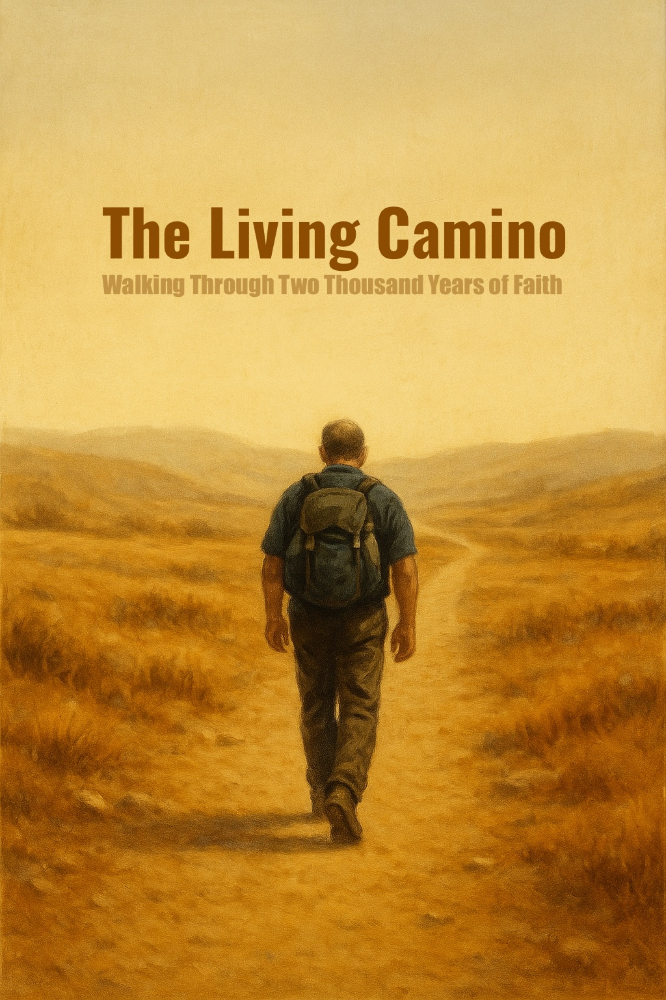

摩西五書：光與口傳的開端
起初的敘事
打開一本聖經，第一句話就震盪人心：「起初，神創造天地。」（創世記 1:1） 接著我們讀到六日的創造——光被呼喚而出，晝與夜分明；天空、大地、海洋次第成形；草木結果子，飛鳥與走獸各從其類。第六日，神照自己的形像造人，賦予他們治理大地的使命；第七日，神歇了祂一切的工，賜福這日為聖日（創世記 1–2 章）。
然而樂園並沒有持久。亞當與夏娃吃了禁果，眼睛明亮卻失去純真，被逐出伊甸園。兄弟之間的血染上了土地——該隱殺了亞伯。人類的腐敗加劇，直到大洪水臨到，唯有挪亞一家因方舟得救（創世記 3–9 章）。這些故事並非單純的寓言，它們構成了猶太與基督信仰對人性與宇宙秩序的根本理解。
祖先的呼召與記號
歷史的轉折點出現在一個名叫亞伯蘭的人身上。神呼召他離開本地本族，要使他的後裔成為大國，賜給他迦南地為業（創世記 12 章）。在創世記 17 章，神與亞伯蘭立約，改名為亞伯拉罕，並以「割禮」作為這約的記號。從此，割禮不只是身體上的記號，更成為猶太民族身分的根基。
亞伯拉罕的後裔成為故事的主線。以撒、雅各、十二個支派的形成，特別是約瑟的故事：他被兄長們因嫉妒而賣到埃及，卻因神的眷顧成為埃及宰相。多年後，當飢荒襲擊迦南時，約瑟的兄弟們來到埃及糴糧，於是雅各全家七十口都搬到埃及，在那裡繁衍生息（創世記 37–50 章）。
出埃及與律法
時間流轉，約瑟去世，新的法老「不認識約瑟」，懼怕以色列人眾多，便奴役他們，甚至下令殺死希伯來男嬰（出埃及記 1 章）。這時摩西誕生了。他奇蹟般地被保存性命，在埃及王宮中長大，後來逃往曠野。神在燃燒的荊棘中向他顯現，呼召他帶領百姓出埃及（出埃及記 3 章）。
經過十災，紅海的分開，以色列人終於離開為奴之家。摩西在西奈山上領受十誡，並得到律法。這些律法規範了獻祭、節期、潔淨、民事、刑事——幾乎涵蓋生活的方方面面（出埃及記、利未記）。
然而，他們的不信與悖逆讓這群人不得不在曠野漂流四十年，直到那一代人倒閉，下一代才能進入應許之地（民數記、申命記）。摩西在尼波山上遙望迦南，卻不得進去。他的接班人約書亞，將承接這使命（申命記 34 章）。
托拉與口傳
這五卷書，被稱為「摩西五書」，是猶太教信仰的核心，希伯來語稱為「托拉」。它既是歷史，又是律法，更是猶太民族身份的根基。
但是猶太傳統還說：摩西不僅留下了「文字的律法」，還留下了「口傳的律法」。這口傳的部分，在世代相傳中逐漸整理成文，最後編纂成浩瀚的《塔木德》。在其中，拉比們爭論如何守安息日、如何理解「眼中有眼，以牙還牙」、如何在沒有聖殿的時代實踐獻祭精神。
基督徒教會大多沒有將塔木德納入信仰體系。因為在基督教神學裡，律法已由基督成全，塔木德那套「如何守律法」的細節似乎失去必要。但若你從文化角度看，就會發現：托拉加塔木德，才是猶太信仰的完整樣貌。
為什麼要從這裡開始？
我們今天讀聖經，常常是翻開印刷精美的一卷，從「要有光」開始。但若換一個角度來看，這整個開頭其實是摩西寫給一個正在逃亡、剛剛建立民族身份的族群。這不是單純的宇宙起源故事，而是「誰是我們、我們從哪裡來」的回答。
摩西自己是一個在埃及長大、後來流亡曠野的領袖。他帶領百姓走過海水、進入荒野，用這五卷書替民族立下記憶：上帝曾造天地，曾與亞伯拉罕立約，如今也要帶你們回到應許之地。
這就是摩西五書，也是猶太民族的托拉。 而故事，才剛剛開始。下一章，將進入「約書亞記」——摩西的接班人，如何把民族真正帶進迦南。
約書亞與士師：從應許之地到無王的時代
跨過約旦河的勝利
摩西死在尼波山上，望見迦南卻不得進去。接下來的故事交到約書亞手裡。 約書亞並不是一個「創造故事」的人，他不是詩人，也不像摩西一樣帶來律法。他是軍事指揮官，是一個行動派。聖經描寫他帶領以色列人渡過約旦河，水流奇蹟般止住，百姓在乾地上走過去（約書亞記 3 章）。
進入迦南的第一場戰役，就是著名的耶利哥之戰。那裡的城牆堅固，卻在以色列人繞城吹角之後倒塌（約書亞記 6 章）。對猶太人來說，這是一個「神與他們同在」的象徵；但如果換個角度看，這也是一個民族對土地的掠奪戰。考古學界甚至爭論：耶利哥當時是否真的有一座城牆？
這讓問題浮現出來：當我們說「應許之地」，到底是在說神賜下的禮物，還是一個民族藉由信仰的力量正當化了自己的征服？
分地與未竟之事
約書亞記的後半段講的不是戰爭，而是分地。十二個支派分配到各自的地業——這不只是地圖的分割，更是民族身份的具體化。 然而，約書亞書也坦白地記下：許多迦南城邑沒有完全被征服（約書亞記 13–17 章）。換句話說，這並不是一個乾淨利落的勝利，而是一個充滿妥協與未完成的過程。
這點很重要。因為接下來的歷史，正是建立在這個「半完成的征服」之上。以色列人與迦南人並存，有時通婚，有時同住，有時彼此衝突。這種「沒有完全佔領」的狀況，也成為《士師記》的背景。
士師是誰？
接著進入《士師記》，中文「士師」一詞很容易讓人誤解，好像是現代的法官。但其實，原文希伯來文是 שֹׁפֵט (shofet)，意思更接近「領袖」、「審判者」，甚至「臨時的拯救者」。這些士師並不是世襲王，也不是律法學者。他們更像是「神靈臨時興起的人物」，在危機的時候帶領百姓。
換句話說，士師不是制度化的官職，而是一種「被呼召的人物」。聖經的描述裡，他們常常是能聽見耶和華話語，或者被「耶和華的靈」感動的人（士師記 3:10；6:34）。他們兼具宗教與軍事功能：既是先知般的宣告者，也是戰場上的領袖。
這點很有意思，因為它顯示出：在一個還沒有王的時代，領導權不是透過制度繼承，而是透過「神蹟」與「魅力」來建立。
一個混亂的時代
《士師記》有一句反覆出現的話：「那時以色列中沒有王，各人任意而行。」（士師記 17:6；21:25） 這句話幾乎是對那個時代的總結。聖經裡一再出現「以色列人行耶和華眼中看為惡的事」，於是被敵人欺壓，再呼求神，神就興起一位士師拯救他們。這是一個循環：墮落 → 被壓迫 → 呼求 → 拯救 → 再墮落。
幾位著名的士師，像是女先知底波拉（士師記 4–5 章）、基甸（士師記 6–8 章）、參孫（士師記 13–16 章），都帶著鮮明的故事色彩。底波拉是少數女性領袖，基甸從膽怯的農夫成為大能的勇士，參孫則是一個帶著悲劇英雄色彩的「拿細耳人」。
這些人物都很戲劇化，但同時也凸顯了社會的脆弱——每個士師只能解決當下的問題，沒有建立起長期穩定的制度。
非教會的挑戰
如果不帶著教會的眼鏡來讀《士師記》，會發現它其實是在描寫一個「政治真空的社會」。沒有王，沒有穩定的政府，只有臨時出現的領袖和一再的混亂。這樣的社會其實很危險：每個部落各自為政，甚至彼此攻擊。
那麼問題來了：這真的是神原本要他們的政治型態嗎？還是，這只是歷史中一個過渡的必然？
猶太教的拉比文獻裡，有人讚美士師的時代，認為這是一種「直接由神統治」的社會；但也有人認為，這段歷史顯示人類需要制度，需要一個「王」。
撒母耳的影子
在《士師記》的結尾，社會的崩壞幾乎觸目驚心：但支派的遷徙、利未人妾的悲劇、便雅憫支派差點被滅絕（士師記 19–21 章）。這些血腥的故事不是兒童主日學會講的，它們卻赤裸裸寫在聖經裡。
而在這混亂的盡頭，歷史正在預備一個新的轉折。最後一位士師——撒母耳——即將登場。他不只是一位士師，更是先知，他將為以色列膏立第一位王。
下一篇，我們就會進入撒母耳的世界：從一個無王的部落社會，過渡到「有王的時代」。
從先知到國王：掃羅與大衛的故事
撒母耳：最後的士師
在士師的混亂時代結束之前，出現了一位轉折性人物：撒母耳。他既是士師，又是先知。根據聖經的記載，他的母親哈拿曾因多年不孕，向耶和華祈求，並許願將孩子奉獻給神。撒母耳就成為了從小在聖殿侍奉的孩子（撒母耳記上 1–3 章）。
撒母耳的角色不同於前面的士師。他不僅僅是臨時的軍事領袖，而是「耶和華的代言人」。當百姓要求立一位王來「像列國一樣」時（撒母耳記上 8:5），撒母耳心中不悅，因為這意味著以色列不再單純承認「神為王」。然而，神的回應耐人尋味：祂允許這件事發生，並指示撒母耳為以色列立王。
這裡已經可以看到張力：百姓要制度，先知強調神的直接統治，兩者之間的妥協就形成了「王權」這個新舞台。
掃羅的登場與墮落
第一位被揀選的王是掃羅。他來自便雅憫支派，聖經形容他「又高又壯，眾人中沒有能比他的」（撒母耳記上 9:2）。這樣的外貌描寫，很符合古代人對王的期待。
掃羅的早期表現並不差。他帶領以色列人擊敗亞捫人，百姓因此擁立他為王（撒母耳記上 11 章）。然而，故事的關鍵在於他後來的一場戰爭：攻打亞瑪力人。
根據聖經，耶和華透過撒母耳給掃羅一個非常嚴厲的命令：要將亞瑪力人「徹底滅絕」，包括男人、女人、孩童、嬰兒，連牲畜都不可留（撒母耳記上 15:3）。這是一段令人難以接受的文字——它反映出古代戰爭的殘酷，也顯示出一種「聖戰」的意識形態。
但掃羅沒有完全執行。他留下了亞瑪力王亞甲，並保留了一些上好的牛羊。這在他看來是合理的——百姓要獻祭給神。可是，撒母耳卻嚴厲斥責他，指出「耶和華喜悅燔祭和平安祭，豈如喜悅人聽從祂的話呢？聽命勝於獻祭，順從勝於公羊的脂油」（撒母耳記上 15:22）。
這一役，掃羅失去了神的青睞，也失去了撒母耳的支持。雖然他依然在位，但聖經說「耶和華的靈離開掃羅」（撒母耳記上 16:14）。這是他悲劇命運的起點。
牧羊人王子
就在這個背景下，一個年輕的牧羊人出場了：大衛。 他來自猶大支派，父親是伯利恆人耶西。大衛不是長子，而是家中排行靠後的孩子。他平時在曠野放羊，甚至要用手中的投石器保護羊群免受獅子和熊的攻擊（撒母耳記上 17:34–36）。
當掃羅被「惡魔攪擾」時，大衛因善於彈琴被召進宮中，為王驅散陰霾（撒母耳記上 16:23）。接著，他又因擊敗巨人歌利亞而名聲大噪（撒母耳記上 17 章）。一個沒有戰功背景的少年，突然成了民族英雄。
這裡的對比很鮮明：一邊是失去神靈支持的王掃羅；一邊是被神「暗中膏立」的牧羊人（撒母耳記上 16:13）。在古代政治語境裡，這幾乎等於王位的「合法性轉移」。
友情、猜忌與宮廷政治
掃羅對大衛的態度很複雜。起初，他賞識大衛，甚至讓他常伴左右。但隨著大衛戰功累累，婦女們歌唱「掃羅殺死千千，大衛殺死萬萬」（撒母耳記上 18:7），王的嫉妒心被點燃。
更耐人尋味的是，掃羅的兒子約拿單與大衛成為深厚的朋友。聖經說「約拿單愛大衛如同愛自己的性命」（撒母耳記上 18:1）。這段關係在歷史與神學詮釋中有各種討論，但無論如何，它讓宮廷局勢更加微妙：王子與「潛在的競爭者」結成了盟約。
掃羅多次企圖殺害大衛，甚至親手投槍（撒母耳記上 18:11），但大衛總能逃脫。他一方面尊敬掃羅「耶和華所膏立的王」，拒絕自己動手篡位；另一方面，他的聲望與支持卻不斷增長。這種張力，使故事帶有濃厚的政治鬥爭色彩。
從宮廷鬥爭到王朝轉移
最終，掃羅在與非利士人的戰爭中自殺身亡（撒母耳記上 31 章）。大衛繼位，結束了掃羅王朝，建立了猶大王國的核心。
聖經的記載很明確：這一切不是單純的「英雄傳」，而是一個宮廷鬥爭的過程。從掃羅的命令失敗，到大衛的牧羊人身份，再到王子與「未來王」之間的友情，背後都有一個主題：神的旨意似乎在推動歷史，但同時，這也是一場赤裸裸的政治鬥爭。
預告：王朝的陰影
大衛的登基，對猶太民族而言是一個新時代的開始。但故事並沒有停在「勝利」這裡。很快，我們會看到：大衛王朝裡，權力與慾望再次帶來混亂。兒子們彼此爭奪，血腥與背叛將成為接下來的主題。
大衛王朝的腥風血雨
國王的後宮與種子
大衛成為國王後，帶來的並不只是統一與繁榮。聖經裡寫得很明白：他收了許多妻妾（撒母耳記下 5:13）。這在古代是王權的象徵，但同時也埋下無數家庭悲劇的伏筆。王宮裡的女人越多，王子的數量也越多，而王子的數量多，意味著潛在的王位競爭者也多。
更令人不安的是，大衛自己也犯下了驚天醜聞。他看上了烏利亞的妻子拔示巴，與她發生關係（撒母耳記下 11 章）。為了掩蓋罪行，他設計讓拔示巴的丈夫烏利亞在前線戰死。這個故事，任何人即使不在教會，也會承認是「聖經裡最醜陋的宮廷鬥爭之一」。從此，大衛王室被宣告要承受來自內部的動盪。
兄妹亂倫與血腥報復
不久後，混亂開始爆發。大衛的兒子暗嫩迷戀自己的同父異母妹妹她瑪（撒母耳記下 13 章）。他假裝生病，把她騙進臥室，然後強暴了她。這是一段聖經裡毫不遮掩的亂倫與暴力場景。
大衛聽到後「甚是怒氣」，但卻沒有懲罰暗嫩（撒母耳記下 13:21）。這個縱容，直接點燃了另一個兒子押沙龍的怒火。押沙龍是她瑪的親兄弟，他忍了兩年，最後設計宴會，把暗嫩灌醉後殺死。
這不只是家庭悲劇，而是王室內戰的前奏。
押沙龍的叛亂
押沙龍不只是個心狠手辣的復仇者，他同時也長得俊美，備受百姓喜愛（撒母耳記下 14:25）。於是，他一步步贏得人心，最後乾脆舉兵叛亂，自己稱王。
最戲劇化的場景是：押沙龍為了羞辱父親，公然在宮殿屋頂，與大衛的妃嬪發生關係（撒母耳記下 16:22）。這是一個極度政治化的動作——在古代中東，奪取王的後宮就代表奪取王權。
大衛被迫逃離耶路撒冷，一度像當年逃避掃羅時那樣流亡。
大將軍約押的手
押沙龍雖然氣勢如虹，但最終戰敗。他騎著騾子逃跑時，頭髮卡在樹枝上，懸在半空，成了一個無力掙扎的活靶（撒母耳記下 18:9）。大衛明確下令：「你們要寬待那少年人押沙龍」（撒母耳記下 18:5），因為他畢竟是自己的兒子。
然而，大衛的將軍約押不耐煩，直接用三根短槍刺入押沙龍的心臟（撒母耳記下 18:14）。這一舉動，徹底摧毀了父子的關係，也讓大衛陷入極度悲痛。他不停哀號：「我兒押沙龍哪，我兒押沙龍哪！我恨不得替你死！」（撒母耳記下 18:33）。
但約押也很冷酷。他警告大衛，如果他繼續為叛徒兒子哭泣，而不出來安撫軍隊，整個國家就會瓦解（撒母耳記下 19 章）。這是現實政治與父子親情的撕裂。
王位的爭奪
押沙龍死後，大衛雖然重回耶路撒冷，但王室的爭權還沒結束。他的另一個兒子亞多尼雅，趁大衛年老體衰時自立為王（列王紀上 1 章）。這又是一場內部政變。
最後脫穎而出的不是亞多尼雅，而是拔示巴的兒子所羅門。大衛臨死前，立所羅門為繼承人。聖經描述了一連串宮廷鬥爭：亞多尼雅最後被所羅門處死，約押也因反叛被清算。大衛王朝正式傳到第三任國王手中。
收尾與懸念
這一切讀起來，根本就是一場古代版的宮廷鬥爭史，沒有粉飾的浪漫，只有血與權力。聖經並沒有隱藏大衛的罪，也沒有避談他的兒子們的叛亂、亂倫與流血。
這就像一部歷史紀錄片，或者一齣大型家族劇：從牧羊少年到帝國之王，大衛的故事不是英雄的完美升華，而是一個家族內部的毀滅序曲。
下一篇，我們要把焦點放在大衛之後的王——所羅門。這位以智慧著稱的君王，將如何帶領以色列走向黃金時代？而黃金之後，是否就是裂解的開始？
所羅門王的黃金時代
智慧的試煉
大衛死後，他的兒子所羅門登基。這個年輕的王剛上位，滿朝文武和百姓都盯著看——他到底能不能坐穩王位？
聖經裡留下一個精彩場景，簡直像是宮廷法庭大戲。兩個妓女帶著一個孩子來到王前。她們各自聲稱那孩子是自己的，另一個則是把孩子壓死的女人。沒有DNA鑑定，沒有監控錄影，一切就是她說她也說。
所羅門王怎麼做？他冷冷地下令：「把活孩子劈成兩半，一人一半！」（列王紀上 3:25）。這話一出，宮廷裡應該倒吸一口涼氣。但這就是他的智慧陷阱。
真正的母親立刻喊：「不要殺孩子！把他給她吧！」 而假母親卻說：「對啊，大家一人一半！」於是，真相大白。這場「審判」立刻震動整個以色列，眾人都說：這個王有神賜的智慧，可以秉行公義。
黃金王國
所羅門的時代，是以色列歷史的巔峰。他繼承父親大衛所打下的疆土，讓以色列進入前所未有的盛世。聖經說那時候「銀子在耶路撒冷算不了什麼」（列王紀上 10:21），因為太多了，滿地都是金器和香柏木。
他不只是暴發戶，還是建築狂人。他完成了大衛未能建成的 聖殿，用了七年，把耶路撒冷變成宗教與政治的中心。又花十三年建造自己的王宮，規模更是誇張。這裡的細節，讀起來就像《宮廷甄嬛傳》加《帝國建築史》的合體——充滿工匠、香柏木、黃金裝飾。
所羅門還娶了許多外邦女子，其中最有名的就是埃及法老的女兒（列王紀上 3:1）。這種婚姻不只是愛情，更是外交手段。以色列在他的統治下，成為區域大國，和鄰邦建立聯盟，甚至吸引了外國君王來訪。
最傳奇的故事莫過於 示巴女王。她聽聞所羅門的智慧與財富，帶著寶物和難題前來試探（列王紀上 10 章）。據聖經說，她問的每一個難題，所羅門都能解答。最後她讚嘆說，傳聞裡的榮耀還不到一半！這場會面，既像外交峰會，又像明星訪談，所羅門成了全世界矚目的「智慧偶像」。
盛世的暗影
然而，黃金時代的背後，也有陰影。所羅門的奢華需要龐大的稅收和徭役。他徵召大量百姓為王室服苦役，這種壓榨逐漸埋下怨恨。
更大的問題是，他娶了眾多外邦女子，隨她們拜偶像，為外邦神建祭壇（列王紀上 11:4–8）。聖經毫不留情地記錄了這一點：晚年的所羅門，心偏離了耶和華。這成了整個王朝裂解的序曲。
結語：繁華將盡
所羅門的智慧、他的建築、他的外交和財富，讓以色列成為一顆耀眼的明星。但正如歷史上無數帝國的黃金期一樣，榮耀與衰落往往緊緊相連。
聖經的筆觸已經預告了：在所羅門死後，王國將分裂為南國猶大與北國以色列。這不是立刻發生的崩塌，而是一場從內部滋長的裂痕，最終將吞噬所羅門一手建立的輝煌。
下一篇，我們將走進那場分裂，看見兄弟相爭、國家一分為二，猶太人的命運開始走向新的篇章。
王國裂解：十個支派的消失
榮耀後的裂縫
所羅門死後，他的王國卻沒有繼續延伸輝煌，反而開始崩解。原因很直接：稅收與勞役壓得百姓喘不過氣，尤其是北方的支派。他的兒子羅波安繼位時，百姓提出訴求：能否減輕重擔？羅波安不但沒有鬆綁，反而放話：「我父親用鞭子管轄你們，我要用蠍子鞭子管轄你們。」（列王紀上 12:14）
一句話，點燃了叛火。北方十個支派脫離，擁立耶羅波安為王，建立了北國以色列。南邊則剩下猶大與便雅憫，這就是南國猶大。從此，統一的以色列不復存在。
亞述的登場
北國雖然幅員廣闊，但政局不穩，王位頻繁更替，暗殺、篡位比比皆是。外患之下，這個國家格外脆弱。
這時候，一頭來自北方的猛獸正在壯大：亞述帝國。亞述的都城尼尼微（是的，就是約拿書裡的那個尼尼微），以殘暴和鐵血著稱。歷史記載他們的軍事風格非常直接——鐵器武器、恐怖戰術，把俘虜剖腹、剝皮、釘在城牆上，以此震懾四方。對亞述來說，統治靠的不是仁義，而是讓敵人徹底喪膽。
亞述逐漸擴張，從兩河流域一路向西，把目光放到地中海東岸這片肥沃的土地。北國以色列無力抵擋，公元前722年（聖經：列王紀下 17 章），撒馬利亞城陷落。亞述的做法很特別：他們不只是統治，還要改造。他們把上層的精英擄走，散居到帝國各地；然後把亞述人帶來，和剩下的以色列平民混居。
結果？原本純粹的北國十支派消失，留下來的人與外族通婚，成為後來的「撒瑪利亞人」。在猶太人的眼裡，這群人既不純血，也不純信仰，成為日後新約時代猶太人最瞧不起的族群。
螳螂捕蟬，黃雀在後
亞述看似不可一世，但歷史的規律是：強權終有後來者。東方的巴比倫漸漸崛起，取代亞述成為兩河流域的新霸主。
說到巴比倫，就不得不提更早的 漢摩拉比（約公元前18世紀）。他以「漢摩拉比法典」著稱，刻在石碑上的律法，講究「以眼還眼，以牙還牙」，顯示出早期美索不達米亞社會的嚴格規範。雖然他的時代早於以色列王國數百年，但這種「法律與秩序」的傳統，成了巴比倫精神的一部分。
巴比倫在亞述衰敗時趁勢而起，後來會把矛頭指向南國猶大。但這，就是下一篇的故事了。
聖殿的火光：從耶路撒冷到巴比倫
南國孤影
在北國以色列覆滅後，南國猶大就像孤島一樣存在著。猶大人或許暗自慶幸，因為耶路撒冷還有聖殿，還有大衛王朝的血脈，他們覺得上帝應該會保護這片土地。
但現實是，猶大依舊被夾在大國角力之中。亞述、埃及、巴比倫，輪番伸手過來，要求進貢、效忠。聖經裡清楚描述了猶大諸王的無力：有人投靠埃及，有人想和巴比倫周旋，最終全都徒勞。
先知的警告
這段時間，先知們一再發聲。耶利米在耶路撒冷呼喊，警告百姓不要依靠虛假的盟約，不要以為「我們有聖殿」就能平安（耶利米書 7:4）。以西結在被擄到巴比倫後，甚至異象看見耶和華的榮耀離開聖殿（以西結書 10章）。
這些話對百姓來說刺耳，因為沒有人願意相信耶路撒冷會被毀。
巴比倫的圍城
公元前586年，事情真的發生了。巴比倫王尼布甲尼撒第三次攻打耶路撒冷。這一次，城牆被攻破，聖殿被燒毀，城中精英被擄走，只剩下一些窮苦農夫留在本地（列王紀下 25 章）。
這就是猶太歷史上最慘痛的「巴比倫之囚」：精英被放逐到異地，沒有聖殿、沒有國王，只剩下身份的碎片。
巴比倫與帝國的遊戲
巴比倫的強盛讓人想起更古老的漢摩拉比——雖然他早在千年前就去世了，但「巴比倫」這個名字總和強權與法律掛鉤。尼布甲尼撒修築的空中花園，後來被列為世界七大奇蹟之一，但在猶太人眼裡，巴比倫是一個黑暗的符號，是「擄掠與流亡」的代名詞。
然而，強盛的巴比倫只維持了不到一百年。波斯帝國的居魯士大帝興起，席捲兩河流域。公元前539年，他攻入巴比倫，幾乎不費一兵一卒，因為城內百姓早已厭倦了巴比倫王朝。
波斯的統治方式和亞述、巴比倫不同。亞述靠恐怖，巴比倫靠威權，波斯則靠「懷柔」與宗教自由。居魯士頒布詔令，允許猶太人回到耶路撒冷，重建聖殿（以斯拉記 1:1–4）。這是聖經裡罕見的時刻：一個外邦君王被稱為「耶和華的受膏者」（以賽亞書 45:1）。
希臘的陰影
不過，歷史的巨輪沒有停。波斯後來被馬其頓的亞歷山大大帝擊敗。亞歷山大以驚人的速度征服了整個近東，把希臘語與文化帶到耶路撒冷。
對猶太人來說，這既是威脅，也是挑戰。他們開始面對一個問題：要保守摩西的律法，還是要融入希臘的生活？這個問題，會一直延續到新約時代。
羅馬的腳步聲：從亞歷山大到耶穌的降生
亞歷山大的遺產
亞歷山大大帝三十二歲就去世了，像一顆燃盡的流星。他死後沒有留下繼承人，龐大的帝國被幾位將領瓜分。埃及落在托勒密王朝手裡，敘利亞和巴比倫則由塞琉古家族掌控。耶路撒冷正好卡在這兩個勢力的中間，像骨頭卡在兩隻狗嘴裡，誰也不想放掉。
托勒密人曾經抓走猶太人到埃及，把他們編入軍隊和行政系統；塞琉古人則更強勢，試圖把希臘文化直接壓在猶太律法之上，連聖殿都不放過。聖經《馬加比書》（不在新教正典，但猶太史裡頭有記載）記得很清楚：塞琉古王安提阿古四世竟然在聖殿裡立起宙斯像，逼猶太人獻上豬。這對猶太人來說，簡直是世界末日。
馬加比的火焰
危機之中，一個叫馬加比的家族舉起反抗的大旗。這場游擊戰打了幾十年，最後竟然真的成功了。猶太人在公元前二世紀中葉，短暫地建立了一個獨立的國家，這就是後來所說的哈斯蒙尼王朝。他們重新潔淨聖殿，把異教的污穢掃出去。今天猶太人的光明節，就是在紀念這件事。
八十年的獨立，聽起來不長，但對被外族壓迫了幾百年的民族來說，已經像是奇蹟了。只是，王朝內部仍然分裂，有人想靠近希臘文化，有人堅持摩西律法。這種內部矛盾，也成了外國人插手的藉口。
羅馬人的到來
公元前63年，羅馬將軍龐培來到這塊土地。他打開了耶路撒冷，甚至走進了至聖所——就是傳說中存放十誡石版的地方。聖經沒有明說「約櫃」此時還在不在，但猶太人的記憶裡，它早已失落。龐培看見的，是一個沒有偶像的空殿。對羅馬人來說，這宗教真是詭異：一個看不見的神，卻讓人寧死不拜其他偶像。
從此，猶太地成為羅馬的屬國。羅馬人很務實，他們不想天天管這些頑固的猶太人，所以扶植一個「自己的王」來管理。這就是希律大帝。
希律王的陰影
希律的血統一直被爭議：他有以土買（以東人）的背景，不是純粹的猶太人。雖然他為了討好猶太百姓，重修了耶路撒冷的聖殿，讓它恢復榮耀，成為「第二聖殿時期」最壯麗的建築。但猶太人心裡清楚，他是羅馬的傀儡。
聖經《馬太福音》記錄了他晚年的恐懼：有東方的博士來到耶路撒冷，說天上出現了一顆星，預示一位「猶太人的王」已經誕生。這消息像一把刀刺進希律的心。年邁的王突然明白，他花一輩子建立的權力，可能會被一個嬰兒推翻。
於是，他下令在伯利恆屠殺男嬰（馬太福音 2:16）。這是一場殘酷的血洗，小小的伯利恆因而成為歷史的傷口。
一對木匠夫妻
故事的焦點轉向一對卑微的夫婦。約瑟，是個木匠；瑪利亞，是個年輕女子。聖經的描述驚世駭俗：瑪利亞因聖靈懷孕，生下的孩子，名叫耶穌（馬太福音 1:18–25；路加福音 1–2章）。
當希律的殺令逼近，這對夫妻帶著新生兒逃往埃及（馬太福音 2:13–15）。這是一個令人心驚的畫面：猶太人的彌賽亞，卻要逃離自己的土地，暫時在異邦尋求庇護。這不只是歷史的巧合，聖經刻意把它連結回摩西：摩西曾帶領以色列人出埃及，而現在，新的救主從埃及回來。
預告
舞台已經搭好。羅馬人統治，聖殿重建但失落，百姓在律法、政治、希望與絕望之間拉扯。耶穌的故事，將在這樣的黑暗中展開。
三十歲肉身成道用血洗清我們罪的彌賽亞
隱藏的歲月
在四卷福音書中，耶穌三十歲之前的生命幾乎被完全隱去。除了路加福音中十二歲那一年，他在耶路撒冷聖殿裡與教師辯論、叫眾人驚訝的那一幕（路加福音 2:41–52），其他篇章幾乎一片空白。 這種沉默反而引人好奇：一位後來改變世界的人物，他的青年時代到底如何度過？為什麼聖經沒有留下任何痕跡？
路加記下了一個關鍵：「耶穌開頭傳道，年紀約有三十歲」（路加福音 3:23）。在猶太文化裡，三十歲是人成熟、可承擔公職與責任的年紀，利未人三十歲才能正式在會幕中服事（民數記 4:3）。於是，耶穌選擇在這個年齡，走上公開的舞台。
約旦河畔的起點
故事從約旦河開始。那裡有一位剛烈的先知施洗約翰，呼喊：「天國近了！你們應當悔改！」（馬太福音 3:2）。 耶穌從加利利來到他面前，要求受洗。約翰驚訝：「我當受你的洗，你反倒上我這裡來嗎？」（馬太福音 3:14）。然而耶穌回答：「你暫且許我，因為我們理當這樣盡諸般的義。」（馬太福音 3:15）。
當他從水裡上來時，天開了，聖靈彷彿鴿子降在他身上，有聲音從天上來說：「這是我的愛子，我所喜悅的。」（馬太福音 3:16–17）。從此，三十歲的耶穌開始了短暫卻震撼的三年。
加利利的光與衝突
耶穌的第一個舞台不是耶路撒冷的聖殿，而是加利利的鄉村。他在迦百農醫治病人，在加拿的婚宴把水變為酒（約翰福音 2:1–11）。 群眾蜂擁而至，他講論八福：「虛心的人有福了！因為天國是他們的。」（馬太福音 5:3）。這些話既安慰人，也挑戰了既有的秩序。
宗教領袖們開始不安。法利賽人質疑他為什麼在安息日治病；撒都該人挑戰他關於復活的教導。耶穌的回應往往尖銳，甚至直接斥責：「你們假冒為善的文士和法利賽人有禍了！」（馬太福音 23:13）。
走向十字架
耶穌清楚知道自己正在完成一條古老的道路。當他最後一次進入耶路撒冷時，騎著驢駒，群眾揮舞棕樹枝喊著「和散那！」（約翰福音 12:13）。這正應驗了先知撒迦利亞的話：「看哪，你的王來到你這裡，他是公義的，並且施行拯救，謙謙和和地騎著驢，就是騎著驢的駒子。」（撒迦利亞書 9:9）。
然而榮耀的呼喊很快化為陰謀與審判。他被門徒出賣，被宗教法庭控告，最後交在羅馬人手裡釘上十字架。臨終前，他只留下了一句話：「成了。」（約翰福音 19:30）。這是痛苦的結束，也是某種完成。是否真的應驗了古代的彌賽亞預言？聖經讓人自行體會。
短暫卻深遠的三年
三年，耶穌如同一顆劃破長空的流星，照亮了猶太的土地。他既不是法利賽人，也不是撒都該人，只是一位平民出身的木匠之子。然而他挑戰舊有的規範，打破傳統的邊界，把邊緣人拉進故事的中心。
預告：一種新的反叛
這樣的彌賽亞，像是一位異類的反叛者。他不靠權力，不依靠軍隊，而是以言行衝撞舊有的秩序。三年之後，他的身影雖然消逝，卻留下了一個傳統：用勇氣與膽識，去完成超越世俗的使命。
這個傳統並沒有隨著耶穌的死而熄滅。它將延續在一些追隨者的腳步裡——有人走遍各地傳道，有人甚至從耶穌的親族中站出來。更令人驚訝的，是一位原本敵視他的猶太人，後來成為最狂熱的宣講者。
下一篇，我們將跟隨這股「反叛的火種」如何跨越疆界，從耶路撒冷走向外邦，展開全新的篇章。
叛逆者的神學：保羅與路加
如果說耶穌的故事是一場如流星般劃過的三年短劇，那麼接下來的篇章，則是這場劇烈燃燒後留下的烈焰──由一個並不在最初舞台上的人，將這股力量系統化、擴張，並推動至地極。這個人，就是保羅。
從敵人成為「基督的奴僕」
在《使徒行傳》中，我們第一次遇見保羅時，他還叫掃羅。他不是十二使徒，不曾與耶穌一同行走在加利利，也沒有親耳聽過山上的講道。相反地，他是猶太公會的熱心分子，親手批准司提反被石頭打死（徒7:58–8:1），並領著大祭司的文書，要去大馬士革逮捕那些信奉耶穌的猶太人。
然而，在那條路上，他被光擊倒，聽見一個聲音呼喚他：「掃羅，掃羅，你為什麼逼迫我？」（徒9:4）。這一幕翻轉了他的一生。從那以後，他不再自稱猶太律法的守護者，而是「耶穌基督的僕人」（羅1:1），甚至說「我活著就是基督」（腓1:21）。這樣的轉變，不只是個人皈依，更是一種徹底的身份重建：從迫害者，變成宣講者；從壓制福音的人，變成為福音受盡苦難的人。
因信稱義：基督教的神學支架
如果說彼得是「磐石」，為耶穌的教會立下根基，那麼保羅則是建構了整個神學的大廈。他不只是延續福音故事，而是把它轉化為一個完整的思想體系。
在《羅馬書》中，保羅寫下了那句影響基督教兩千年的話：「義人必因信得生」（羅1:17）。這不再只是關於猶太律法或割禮的討論，而是關於人如何在神面前得以站立──不是靠行為，不是靠血統，而是靠信心。這就是「因信稱義」，一個推翻了猶太傳統宗教邊界的宣告。
更大膽的是，他把福音推向外邦人。保羅在《加拉太書》中說：「並不分猶太人、希利尼人，自主的、為奴的，或男或女，因為你們在基督耶穌裡都成為一了」（加3:28）。這樣的話，在一個分隔森嚴的古代社會裡，幾乎是叛逆的口號。
與彼得、路加的交錯
保羅並不是孤獨的思想家。他與彼得時有爭執（加2:11-14），爭執的核心仍然是福音是否只屬於猶太人，還是可以跨越界線，臨到外邦人。這些爭執並沒有被美化刪去，而是直接寫進了聖經文本，成為早期教會的掙扎與真實。
而在另一邊，他的旅程記錄者──路加──則用醫生般的細膩筆觸，寫下了《路加福音》與《使徒行傳》。這位希臘背景的朋友，把福音從猶太的土地帶到希臘羅馬的語境裡，讓這個故事不再只是猶太人的傳說，而成為能與哲學、歷史並列的宏大敘事。
效法基督：叛逆的延續
保羅不只是一位神學家，他更是一位身體力行的「模仿者」。他多次說：「你們該效法我，像我效法基督一樣」（林前11:1）。這不是自我誇耀，而是一種極端的承擔──他要用自己的生命來展示耶穌的生命，甚至說：「我與基督同釘十字架，現在活著的不再是我，乃是基督在我裡面活著」（加2:20）。
這種「效法基督」的思想，本質上仍然是一種反叛。它反叛了律法的權威，反叛了種族的邊界，甚至反叛了當時羅馬世界的秩序。
預告：福音與帝國
保羅與路加的篇章，構成了新約超過一半的文字。他們留下的，不只是書信與敘事，更是一個足以支撐教會存續兩千年的神學骨架。這股力量沒有因羅馬的壓制而熄滅，反而在帝國的版圖裡繼續擴張。
接下來的歷史，將見證福音與羅馬帝國的相遇──這場相遇最終不只改變了猶太人的故事，也改變了世界的故事。
羅馬帝國與聖經的確立
從地下信仰到帝國的庇護
當羅馬皇帝君士坦丁在西元 313 年頒布《米蘭詔令》，基督徒第一次能夠公開禮拜，不必再偷偷摸摸地躲在墓穴裡。幾十年之後，狄奧多西一世在西元 380 年宣布基督教為國教，基督徒不只是合法，而是帝國的「官方信仰」。這意味著一個重大問題無法再迴避：到底哪些書卷才算是「聖經」？
正典的爭議
在基督徒還被迫害的年代，不同的教會流傳著不同的經文： • 有人讀《馬太福音》《馬可福音》《路加福音》《約翰福音》，這幾乎所有教會都承認。 • 但也有教會喜歡《多馬福音》《彼得福音》《牧人書》《十二使徒遺訓》，甚至有一卷《彼得啟示錄》。 • 保羅的書信大多流行，但哪些是真正的保羅親筆？當時也有爭議。
如果沒有一個統一標準，羅馬帝國根本無法以「聖經」來治理「國教」。
尼西亞會議與後續大公會議
西元 325 年，君士坦丁召開第一次尼西亞大公會議，主要是解決基督「是神還是被造物」的神學爭議（亞流派 vs. 正統派）。雖然這次會議沒有正式定下「66 卷」的名單，但它象徵著：帝國開始介入信仰的內容。
之後的數十年，地方會議開始一一確認正典。 • 西元 367 年：亞他那修（亞歷山大的主教）在復活節書信裡，第一次清楚列出 27 卷新約（正是我們今天的版本）。 • 西元 393 年，希坡會議 與 397 年，迦太基會議：北非教會正式確認新約 27 卷，舊約則採用猶太經典（律法、先知、聖卷）為基礎。 • 之後的 西元 419 年 迦太基會議 再次重申，並得到更廣泛承認。
這些會議確立了現在所謂的 66 卷聖經（新教版本）。不過，天主教後來仍保留猶太次經（多比傳、馬加比傳、所羅門智訓等），因此天主教聖經的篇數超過 66。
意義
當聖經被確立為一套完整文本，它不再只是散落各地的手抄本，而是成為帝國與教會共同承認的經典。從此，這 66 卷書構成了猶太傳統與基督信仰的完整敘事： • 《創世記》裡「要有光」的創世故事， • 《馬太福音》裡「馬槽中的嬰孩」的降生， • 直到《啟示錄》裡「新天新地」的異象。
這套文本成為歐洲文明的精神基礎，也成為後世翻譯、戰爭、改革、甚至文學創作的無窮源頭。
預告
但歷史的舞台不會靜止。當聖經的文字被鐫刻下來，當羅馬帝國擁抱這個信仰，帝國本身卻開始分裂：東羅馬與西羅馬，君士坦丁堡與羅馬。 就在帝國內部搖晃之際，一股新的力量正在沙漠中成形——穆罕默德、法蒂瑪、阿里的後代，還有即將崛起的哈里發與奧圖曼。
這將是下一篇的故事。
沙漠的回聲：從穆罕默德到鄂圖曼
一個新先知的聲音
西元七世紀初，在阿拉伯半島麥加，一位孤兒出身的商人穆罕默德聲稱自己領受了天啟：天使加百列將真主安拉的話語傳給他。這些話後來被記錄成《古蘭經》。穆罕默德所帶出的核心思想簡單而徹底： • 唯一的真主安拉。 • 人要順服（Islam，即「順服」的意思）。 • 穆斯林要遵行五功：信仰宣言、禮拜、施捨、齋戒、朝聖。
這與猶太、基督傳統有深厚的血緣關係，穆斯林稱猶太人和基督徒為「有經人」，因為他們同樣有聖書。
爭奪的火種：阿里與法蒂瑪
穆罕默德去世後，誰該繼承他的位置？這成為伊斯蘭歷史上最大的爭議。部分人擁立穆罕默德的岳父阿布·伯克爾成為首任哈里發；但另一部分人認為，應該由他的血親後代承接，特別是女兒法蒂瑪與女婿阿里。這場分裂最終造就了遜尼派與什葉派，直到今天仍然是中東政治和宗教衝突的核心。
擴張的帝國
在哈里發的帶領下，伊斯蘭信仰伴隨軍事力量迅速向外擴展。短短一世紀內，阿拉伯軍隊佔領了敘利亞、埃及、波斯，甚至深入到中亞。耶路撒冷也在 638 年落入穆斯林之手，岩石圓頂清真寺在聖殿山上拔地而起，象徵一個新時代。
蒙古的鐵蹄
到了十三世紀，另一股力量從東方崛起：蒙古帝國。鐵騎所過之處，巴格達在 1258 年陷落，阿拔斯王朝幾乎被摧毀。伊斯蘭世界一度陷入斷裂，但也因蒙古人的轉化，伊斯蘭進入中亞與更遠的疆域。
鄂圖曼的崛起
十四世紀開始，位於安納托利亞的鄂圖曼土耳其逐步壯大。他們最終在 1453 年攻陷君士坦丁堡，東羅馬帝國滅亡。拜占庭教堂改建為清真寺，世界的權力版圖重新洗牌。耶路撒冷也再度落入伊斯蘭勢力之手。
西方的回應：神學與教廷
與此同時，西歐的基督教世界也在醞釀新的力量。十三世紀的阿奎納（Thomas Aquinas）將亞里士多德的哲學融入神學，為天主教奠定系統化的理論基礎。這種結合理性與信仰的嘗試，為中世紀的學院與大學提供了框架。
然而，教廷也因財富與權力而腐化：買賣贖罪券、奢華的教宗宮廷，使得信仰與制度的落差愈發明顯。
預告
帝國興衰，沙漠與大陸的力量交替，讓人懷疑：到底是上帝在主宰，還是人心的貪婪在操縱？
在東方與西方之間：十字軍、絲路與大航海
聖地的誘惑
故事要從 1095 年說起。那一年，教宗烏爾班二世在法國克萊蒙召集大會，對著滿場的貴族與騎士，喊出一句足以改變世界的口號： 「這是神的旨意！」
他號召所有基督徒拿起劍，去收復耶路撒冷。理由是單純的宗教熱情，但背後卻摻雜著權力、土地與經濟的誘惑。於是十字軍出發了，一批批穿著紅色十字布的士兵，長達兩個世紀，接連衝向東方。
他們真的打下過耶路撒冷嗎？有過——1099 年，第一次十字軍佔領了這座聖城，屠殺了裡面幾乎所有的穆斯林與猶太人。但這座勝利並沒有持久。後來的幾次東征，一次比一次灰頭土臉，最後在 1291 年，最後的十字軍據點被攻陷，基督徒徹底退出了聖地。
不被預期的結果
表面上十字軍失敗了，但意外打開了另一扇門。 歐洲人第一次大規模接觸到東方的香料、絲綢、紙張，甚至阿拉伯世界保存下來的希臘哲學與科學。這些「異教徒」帶來的東西，比教會講壇上的布道更吸引人。歐洲人開始渴望與東方的貿易，渴望黑胡椒、肉桂、絲綢。
然而，這個夢並不長久。
君士坦丁堡的陷落
1453 年，東方的霸主 奧斯曼帝國攻下了君士坦丁堡。這座曾經屬於東羅馬的基督教聖城，變成了伊斯蘭帝國的新首都——伊斯坦堡。 隨著奧斯曼人控制東地中海與陸上絲路，歐洲人突然發現：去印度的路、去中國的路，全都被「卡脖子」。
要想要香料？好，可以，但價格翻了幾倍。這樣的現實逼著歐洲開始瘋狂尋找新路。
向海洋出發
於是，大航海時代被迫展開。葡萄牙人率先出發，繞過非洲尋找通道。達伽馬在 1498 年抵達印度，香料航線正式打通。 幾乎同一時間，西班牙資助熱那亞水手哥倫布的夢想——他沒能到達亞洲，卻誤打誤撞地「發現」了美洲。這一誤撞，直接改寫了人類歷史。
接下來的一個世紀，歐洲人瘋狂在海上奔跑：葡萄牙、西班牙、荷蘭、英國、法國……全都想分一杯羹。香料、黃金、白銀，還有黑奴與殖民地，成了新的戰場。
馬丁路德的前夜
就在這些海上風雲翻湧的時代，歐洲的土地上，也同樣暗潮洶湧。 教廷依舊掌握著權威，卻因貪婪與腐敗而日漸失去信任。當人們看著教會販賣贖罪券，卻同時享受來自新大陸的金銀財寶，他們心裡的問號越來越大。
而這正是馬丁路德即將登場的舞台背景。 如果說十字軍東征是歐洲「走出去」的第一次衝動，大航海則是「繞道而行」的戰略突破，那麼宗教改革，將會是「回頭審視自己靈魂」的一次叛逆。
預告
下一篇，我們要走進 1517 年，馬丁路德在威登堡大學門口釘下《九十五條論綱》的那一刻。這不僅僅是對教廷的挑戰，更是一場足以改變信仰、國家、乃至整個世界格局的反叛。
反叛者馬丁路德：從火焰到印刷機的時代
前奏：火焰中的預告
在 1415 年，布拉格大教堂的神父 約翰·胡斯（Jan Hus） 被教廷判為異端。原因很簡單——他說了一句「聖經才是最高權威，不是教宗」。這句話，今天聽起來可能只是平凡的一句口號，但在當時卻是挑戰整個天主教權力結構的炸藥。胡斯最後被綁在火刑柱上，烈火燃燒時，他據說喊出：「你們今天燒的是一隻鵝，但一百年後，你們將聽到一隻天鵝的歌聲，無人能熄滅。」（Hus 在捷克語中意為「鵝」——這成了預言。）
一百年後，這預言仿佛成真——馬丁路德登場。
文藝復興：思想解凍的背景
在胡斯死後的百年間，歐洲並沒有安靜下來。義大利城市佛羅倫斯、威尼斯、米蘭興起了一場被後人稱作 文藝復興（Renaissance） 的思想運動。人文主義者重新閱讀古希臘羅馬的文獻，開始問：人與上帝的關係是否只有一種說法？藝術家米開朗基羅雕刻的《大衛》，是人類力量的頌歌；達文西的手稿，把科學、藝術和信仰混成一體；學者伊拉斯謨甚至把聖經重新翻譯成希臘文原典，試圖讓基督信仰回到最初的純粹。
這場運動的精神就是：敢於懷疑，敢於重讀，敢於重建。 而這種氛圍，正是後來路德敢於反叛的土壤。
印刷術：思想的引擎
如果胡斯的命運注定只能在烈火中結束，那麼馬丁路德之所以能把反叛傳遍歐洲，靠的就是另一場革命：古騰堡的印刷術。 1450 年代開始，印刷書籍不再是僧侶在修道院裡一字一句抄寫的專利，而成了可以大量複製的知識產品。路德的《九十五條論綱》被釘上教堂門時，本來只是一份公開討論的學術文件，卻在短短幾週內被印刷傳遍德國，幾個月內傳到全歐洲。
這是歷史第一次：文字挑戰權威，不再是悄聲密語，而是轟然迴響。
馬丁路德：挑戰巨獸的人
1517 年，路德提出了九十五條，核心在於——「救恩是因信，不是因行。」人不需要透過贖罪券或教會繁瑣的規條來買天堂，而是靠單純的信心接受上帝的恩典。這是後來被稱為 「因信稱義」 的教義。
他在《羅馬書》中找到支撐自己的話： 「義人必因信得生。」（羅馬書 1:17） 這句經文，成了整個宗教改革的精神核心。
路德並不是要毀掉信仰，他甚至沒有打算另立宗教。他只是像一個誠實的修士，在指出教會已經走得太遠。但當龐大的權力機器開始反擊，這個小小的叛逆者就被逼成了革命者。1521 年，在沃姆斯會議上，當眾人要他收回言論，他的回答是： 「這是我的立場，我別無選擇。」
鏈式效應：更多的反叛者
路德不是孤單的。他點燃的火花，很快被其他思想家延續。加爾文（John Calvin） 在日內瓦建立了嚴格的教會治理，強調上帝的主權，後來影響了整個英國與美國的清教徒傳統。
而在英格蘭，因為國王亨利八世與教宗鬧翻（離婚問題），直接讓英國脫離羅馬天主教，建立了 英國國教會。再往後，清教徒帶著改革後的信仰遠渡重洋，成為北美殖民地的精神基礎。
這些支線，最初都是從路德的火種分支出去的。
預告：帝國的反應
路德開啟的反叛，不僅改變了神學，也動搖了政治格局。教廷再也不是唯一的真理中心，聖經被翻譯成各地語言，人人都能自己讀。
帶著歐幾里德出征的務實神學戰士利瑪竇
耶穌會的時代背景
16 世紀的歐洲，因為馬丁路德與加爾文的改革，天主教會陷入空前危機。為了反擊新教，羅馬教廷在 1540 年批准創立了耶穌會（Society of Jesus），創始人是依納爵·羅耀拉（Ignatius of Loyola）。耶穌會的特色是：高度組織、嚴格紀律、智慧與學術訓練，並且忠於教宗。他們被形容為「教宗的特種部隊」，專門應付新教挑戰，並肩負向海外傳教的任務。
在這股浪潮下，出生於義大利馬切拉塔的利瑪竇（1552–1610），成為耶穌會派往東方的明星人物。
把歐洲的學問帶進中國
利瑪竇於 1582 年抵達澳門，後來進入廣東肇慶，再一路北上，最後在北京安頓。他帶來的不僅是《聖經》，還有歐洲最尖端的科學與知識： • 歐幾里得《幾何原本》：他與徐光啟合作翻譯成中文，這是中國首次完整接觸到歐洲數學的邏輯體系。 • 世界地圖：利瑪竇繪製《坤輿萬國全圖》，讓中國人第一次看到世界並非「中國為中心」的樣貌。 • 記憶宮殿法：利瑪竇把西方的人文修辭與記憶術教給中國士大夫，展現他驚人的學養。
這些學問成為他打開中國上層社會的敲門磚。利瑪竇甚至成為一些高官子弟的老師——換句話說，他不只是傳教士，更是「國家級的家教」。
融入中國文化
利瑪竇與其他耶穌會士最大的不同，是他採取了「文化適應政策」： • 他換下神父的袍子，改穿中國士大夫的儒服。 • 他用中文寫書，如《交友論》，模仿儒家文風。 • 他強調基督信仰與儒家倫理並不衝突。
這讓不少士大夫與知識分子對他另眼相看。利瑪竇的策略是「先融入，後傳教」，這是耶穌會的核心思想。
爭議：祭祖禮儀之爭
然而，最大的衝突來自於祖先祭祀。
中國社會認為祭祖是孝道的核心，但從歐洲神學的角度，這可能等於「拜偶像」。利瑪竇的立場是：祭祖屬於社會倫理與文化習俗，而非宗教崇拜，因此可以容許天主教徒參加。
但，並不是所有天主教修會都同意。 • 道明會（Dominicans）與方濟會（Franciscans）等修會認為，祭祖就是宗教儀式，應該禁止。 • 他們直接向羅馬教廷控訴耶穌會「曲解信仰」。
這場爭論後來被稱為「中國禮儀之爭」。
康熙與封禁天主教
清朝康熙皇帝（1661–1722）原本對耶穌會士相當欣賞。因為他們帶來天文、曆法、數學等技術，甚至參與修訂曆法。但當教廷（教宗克勉十一世，1704 年）正式頒布詔令，嚴禁中國信徒祭祖與孔子，康熙認為這完全無法理解，甚至是對中國文化的冒犯。
於是，康熙在 1721 年下詔，把天主教定為邪教，驅逐傳教士。耶穌會在中國的黃金時代，就此結束。
餘音
利瑪竇死於 1610 年，安葬於北京。他是第一位被明朝皇帝允許葬在京城的西方人。他的一生，像是一座橋，把歐洲的科學、宗教與文化帶入中國；但也是一場衝突，揭示了不同文明在宗教與文化上的根本矛盾。
信仰的萬花筒：從國教到清教徒，再到新世界
國教的誕生
16 世紀的英國，信仰不再只是上帝與人的事，更是國王與權力的棋局。當亨利八世因婚姻問題與羅馬教宗決裂，英國國教（Anglican Church）誕生了。這不是一場單純的神學爭論，而是一場王室的政治操作。英王成了「國教最高領袖」，聖經與禮拜仍然保有大量天主教痕跡，但權力歸倫敦而不是羅馬。
然而，這樣的「國教」並沒有平息所有人的不滿。有人嫌它太天主教，有人嫌它太政治。於是，一群自稱要「清理教會」的人出現了——他們就是後來的清教徒（Puritans）。
清教徒與新世界
清教徒想要更純粹、更符合聖經的教會。他們拒絕華麗的儀式，強調個人與上帝的直接關係。但這樣的信仰在英國本土並不討喜，反而受到壓制。於是，他們選擇登船，前往「新世界」美洲。
1620 年，「五月花號」靠岸，他們在新大陸建立殖民地，種下了美國宗教文化的種子。這些人相信他們是「山上的城」，是被上帝揀選來做示範的民族。這種信念深深塑造了後來美國的國家性格——帶著使命感，也帶著一種「我們與眾不同」的自覺。
新教倫理與資本主義
時間快轉到 19 世紀，德國社會學家 馬克斯·韋伯寫下《新教倫理與資本主義精神》。他指出，新教特別是加爾文宗（改革宗）的「勤奮、節制、工作是召命」的觀念，與近代資本主義的興起密切相關。 換句話說，清教徒式的「努力工作、積累財富不是貪婪，而是榮耀上帝」的信仰邏輯，正好為現代經濟提供了精神燃料。這也是為什麼今天研究西方歷史的人，總要把「信仰」和「經濟」放在一起看。
信仰的分支與百花齊放
隨著時間推移，基督教在歐美世界分化出無數教派。路德宗、改革宗（加爾文派）、長老宗、浸信會、循道宗（衛理公會）……這些名稱聽起來像複雜的家族樹，每一支都有不同的重點： • 有的強調聖禮與禮儀。 • 有的強調講道與讀經。 • 有的重視社會參與。 • 也有的主張回到「聖靈」直接的經歷。
特別是 1906 年，美國洛杉磯爆發了一場名為 阿蘇薩街復興 的運動。人們在聚會中經歷了強烈的宗教體驗——有人說方言，有人倒在地上，有人聲稱得到醫治。這就是今日「靈恩運動」（Pentecostalism）的開端。短短一百多年，這個運動已經擴散全球，成為增長最快的基督教派之一。
美國的宗教版圖
今天的美國，雖然世俗化的浪潮越來越強，但基督教仍然佔據壓倒性的比例。皮尤研究中心的數據顯示，大約有七成美國人自認是基督徒，其中福音派、新教各宗派、天主教、東正教並存。這不僅是一種宗教現象，也深深影響了美國的政治、教育與文化。
預告：長老教會的台灣故事
在這龐大的基督教光譜中，有一個分支特別與台灣緊密相連——長老教會（Presbyterian Church）。
19 世紀末，蘇格蘭傳教士 James Maxwell 抵達台灣南部的高雄，靠著行醫打開傳道的大門。後來，來自加拿大的 馬偕醫師（George Leslie Mackay） 則在台北落腳，他的牙科、醫療、教育事工至今仍被津津樂道。這些傳教士並不是單靠講道，而是把「福音」和「醫療教育」結合在一起，形成了長老教會著名的「全人福音」（Word and Deed）傳統。
從日治時代到國民黨統治時期，再到今日，長老教會已經成為台灣人數最多的基督教宗派，並且深深參與社會運動與公共議題。這就是下一篇要講的故事：信仰如何在異國土地上落地生根，並影響整個社會。
信仰落地：台灣的長老教會與宗派光譜
長老教會的起點
19 世紀中葉，隨著清帝國逐漸開放通商口岸，傳教士的腳步也踏上台灣。1865 年，蘇格蘭醫師兼傳教士 馬雅各（James Laidlaw Maxwell） 在高雄開設醫館，這是基督教長老會首次正式在台灣落腳。十多年後，來自加拿大的 馬偕（George Leslie Mackay） 抵達淡水，他拔牙、行醫、創辦學校，一邊用行動贏得百姓信任，一邊講述聖經。
這些傳教士的策略與當時其他宗派不同：他們不單純靠「講道」，而是透過醫療與教育作為進入口。也因此，長老教會在台灣留下了「全人福音」（Word and Deed）的印記：醫院、學校與教會並行。台北的馬偕醫院、台南的新樓醫院，還有台南神學院，都是這個傳統的見證。
特殊的歷史角色
長老教會在台灣的歷史有幾個關鍵轉折： • 日治時期：日本殖民政府對宗教活動進行管控，但長老教會仍在教育與醫療上深耕，甚至成為部分台灣人接觸現代科學與知識的第一扇門。 • 戰後國民黨時期：在白色恐怖與威權政治下，長老教會是少數公開發聲的宗教力量。1970–80 年代的《人權宣言》、《我們的土地宣言》，讓長老教會一度被視為「反對運動」的庇護所。 • 今日：長老教會仍是台灣最大宗派，信徒約 25–30 萬人，約占台灣基督徒總數的三分之一。它的特色在於：母語事工（特別是台語）、社會參與、以及強調信仰與文化的結合。
其他宗派的崛起
長老教會奠基之後，台灣的宗教地景逐漸變得多元： • 真耶穌教會（True Jesus Church） 1917 年起源於中國，1926 年傳入台灣。特色是強調「唯有自己是真教會」，主張信徒必須受「聖靈的洗」，並且遵守安息日。這個教派在台灣有約 3–4 萬名信徒，集中在中南部。 • 地方教會（召會） 與倪柝聲、李常受有關，1920 年代中國本土興起，後傳到台灣。強調「不分宗派」，認為只有地方性的聚會才合乎聖經。台灣召會的規模不小，約 5–7 萬人。 • 耶和華見證人（Jehovah’s Witnesses） 美國興起的教派，1950 年代進入台灣。他們的特色是「挨家挨戶傳福音」，拒絕慶祝聖誕與生日，拒絕服兵役。台灣規模較小，約 1 萬名信徒。 • 末世論教派 近代也有一些「世界末日」為主題的小型團體，例如強調基督即將再臨的「再臨教會」或「小群」。這些群體在台灣規模不大，但因為激進的宣講方式，偶爾登上社會新聞。 • 靈恩運動與新興教派 受到 20 世紀美國靈恩派影響，台灣也出現許多強調「說方言、醫病、趕鬼」的教會，如「靈糧堂」體系。這些教會在都市特別活躍，吸引年輕人與知識分子。
台灣的基督徒比例
根據內政部統計，台灣基督徒（含天主教與新教）約佔 5–6% 人口，其中： • 長老教會：約 25–30 萬人（最大宗） • 靈恩派（如靈糧堂、行道會）：數萬人 • 真耶穌教會、召會、耶和華見證人：各自數萬人 • 天主教：約 30 萬人
雖然比例不高，但基督徒在醫療、教育、文化、公共議題上扮演著舉足輕重的角色。
一個人的朝聖之路-01——最初的念想
想像一下：晨霧瀰漫的西班牙鄉間小徑，你踩著石板路，背包裡塞滿水壺和一本泛黃的筆記本。身邊是來自全球的同路人—一位紐約的銀行家，正抱怨他的空虛人生；一位澳洲的藝術家，尋找靈感火花；還有你自己，在這個快節奏的世界裡，感覺像一葉無根的浮萍。這就是Camino de Santiago，聖雅各之路，一條從法國邊境的聖讓-皮德波爾出發，蜿蜒800公里，直達聖地亞哥-德孔波斯特拉大教堂的傳奇古道。
傳說中，這裡安葬著耶穌的門徒聖雅各，他的遺體在公元9世紀被發現，從此成為歐洲最古老的朝聖路線。近年來，這條路如野火般竄紅：2024年，近50萬人踏上這段旅程，比十年前暴增三倍。為什麼？因為在一個充滿社群媒體幻象、存在虛無的時代，我們都渴望抓住什麼真實的東西，一個能讓心靈安定的錨點。而這條路，不僅是健行，更是兩千年基督教故事的活化石，讓你一步步走進一個充滿轉折、勇氣和救贖的史詩。
但讓我們從源頭說起，從那個改變一切的三十歲青年耶穌開始。他不是抽象的宗教偶像，而是一個生動的革命者，生於猶太小鎮伯利恆，是以色列王大衛的後裔，正如馬太福音1:1記載：「亞伯拉罕的後裔，大衛的子孫，耶穌基督的家譜。」想像他走在塵土飛揚的加利利路上，腳上沾滿泥巴，卻散發出無比的自信。他在約旦河受洗時，天開了，聖靈如鴿子降下，神的声音響起：「這是我的愛子，我所喜悅的。」（馬太福音3:17）。
從那刻起，他的使命展開：上山宣講登山寶訓，教導饒恕、憐憫和內心純潔（馬太福音5-7章），行神蹟如讓水變酒、治癒癱子、甚至使拉撒路從墳墓中復活（約翰福音11章）。他對貧窮的下層階級毫無分別—與稅吏共餐、觸摸痲瘋病人、赦免妓女的罪—打破了社會的階級壁壘，宣揚神的國度屬於每一個破碎的心靈。舊約先知以賽亞預言的僕人，正是他：「但他為我們的過犯受害，為我們的罪孽壓傷。因他受的刑罰，我們得平安；因他受的鞭傷，我們得醫治。」（以賽亞書53:5）。
在最後的晚餐，那個充滿燭光和緊張氛圍的房間裡，耶穌不是惶恐，而是充滿確信。他知道這是他的使命，預言自己的犧牲：「我告訴你們，經上所記的：『他被列在罪犯之中。』這話必應驗在我身上；是的，關於我的事必有應驗。」（路加福音22:37）。他拿起餅和酒，說：「這是我立約的血，為多人流出來，使罪得赦。」（馬太福音26:28）。幾小時後，在十字架上，他大喊：「成了！」（約翰福音19:30）—不是失敗的歎息，而是勝利的宣告，意味著救贖已完成，世人的罪債已付清。三天後，他復活，證實了永生的盼望。
這不僅是故事，而是邀請：聖經呼籲我們效法基督，正如保羅在哥林多前書11:1寫道：「你們該效法我，像我效法基督一樣。」或以弗所書5:1-2：「所以，你們該效法神，好像蒙慈愛的兒女一樣。也要憑愛心行事，正如基督愛我們，為我們捨了自己。」想像一下，如果我們都能像他那樣生活—無私、包容、充滿目的—世界會變得多麼不同？
耶穌的火炬，傳給了他的門徒們。其中，聖雅各—十二門徒之一，耶穌親切稱他為「雷子」（馬可福音3:17）—成為這條朝聖之路的精神守護者。他是首位為信仰殉道的使徒，正如使徒行傳12:2記載：「用刀殺了約翰的哥哥雅各。」相傳，他的遺體被運到西班牙，埋葬於大教堂下，讓這條路成為追隨基督足跡的象徵。
但如果說雅各是這條路的靈魂，那保羅就是基督教走向世界的引擎。他的故事，像一部驚心動魄的轉折劇：原本是掃羅，一個熱血的猶太法利賽人，誓死反對耶穌，視基督徒為異端。他親自監督迫害，甚至在司提反被石頭打死時，看守兇手的衣服（使徒行傳7:58）。但在大馬士革路上，一切改變了：一束刺眼的大光從天而降，他仆倒在地，聽見聲音：「掃羅！掃羅！你為什麼逼迫我？」（使徒行傳9:4）。那是復活的耶穌！從那刻起，掃羅變成保羅，他的生命成為一場永不止息的朝聖之旅—不是西班牙的石徑，而是橫跨地中海的傳道之路，從安提阿到雅典，從監獄到船難，他歷經鞭打、沉船、饑餓，卻從未退縮。
保羅的轉變如此戲劇化，讓人聯想到現代的轉型故事：從企業高管到環保鬥士，從懷疑論者到信仰先驅。他不是孤軍奮戰—他的好友路加，一位希臘醫生，以精準的筆觸記錄這一切。路加不僅是保羅的旅伴，還寫了《路加福音》，細膩描繪耶穌的慈悲（如浪子回頭的比喻），以及《使徒行傳》，這本早期基督教的「冒險日誌」，記載保羅的宣講和神蹟。想像路加在燭光下，沾滿墨水的雙手，記錄保羅在以弗所的暴動，或在腓立比的監獄中唱詩（使徒行傳16:25）。保羅的書信—新約27篇中佔了14篇—成為基督教的藍圖。他強調「以信稱義」的核心：不是靠嚴守律法或好行為得救，而是單單透過對耶穌基督的信仰，神就視我們為義人。
正如羅馬書3:28：「所以我們看定了：人稱義是因著信，不在乎遵行律法。」或羅馬書4:5：「惟有不做工的，只信稱罪人為義的神，他的信就算為義。」這訊息如炸彈般震撼—它解放了人們，從猶太律法的枷鎖中釋放，讓福音傳到外邦人，橫掃羅馬帝國。保羅的朝聖之路，充滿細節：他在雅典的亞略巴古演說，引用希臘詩人來橋接文化（使徒行傳17:28）；在科林多織帳篷維生，邊工作邊傳道；最終，在羅馬入獄，寫下最後的書信，據說以劍殉道。他的生命，正是效法基督的活例證，從迫害者到先鋒，證明轉變永遠不遲。
在中世紀，這股火焰點燃了歐洲。早期基督徒在地下墓穴聚會，面對尼祿的火刑和獅子坑。但公元313年，君士坦丁大帝的米蘭敕令改變一切，基督教從邊緣躍升國教，橫掃大陸。Camino de Santiago在這浪潮中興盛，成為對抗入侵者的精神堡壘。王公貴族和農民肩並肩走這條路，沿途的修道院提供熱湯和庇護。快轉到文藝復興，馬丁路德的九十五條論綱如雷霆般擊中腐敗的教廷，強調「唯獨聖經、唯獨恩典、唯獨信心」，新教從英國清教徒燒到美洲大陸。但天主教仍穩佔全球基督徒約50%，其莊嚴禮儀在Camino的路邊小教堂中，依然讓人肅然起敬。
如今，在21世紀的十字路口，這條路更像一場靈魂的解藥。1906年的洛杉磯亞蘇撒街復興，帶來靈恩運動的活力，讓信仰充滿聖靈的火熱—說方言、醫治、喜樂如派對般親切。面對性解放、同性戀權利運動和年輕世代的空虛，傳統傳道或許顯得僵硬，但Camino不一樣：它活潑、包容。統計顯示，超過60%的朝聖者選擇經典的法蘭西斯路線，不僅為宗教，還為自我療癒—許多人分享，在雨中跋涉時，內心忽然明朗，像保羅在大馬士革的轉瞬間。想像你沿途遇見旅伴，在酒吧分享故事，或在星空下反思：為什麼我活著？這兩千年的旅程，從耶穌的足跡到保羅的書信，再到你的背包，不是強迫的信條，而是溫柔的邀請。
或許你不是基督徒，或許你對宗教抱持懷疑。但何不試試？拿起一本聖經，從路加福音開始，讀讀那些生動的細節。它們不是枯燥的規則，而是指引內心朝聖的寶藏圖。在Camino上，每一步都是對話—與歷史、與自己、與那超越的奧秘。誰知道，這可能就是你人生中最震撼的轉折，一場讓虛無變成目的的冒險。背包準備好了嗎？路在腳下，等你出發。
一個人的朝聖之旅-02——台南的步履
南臺灣的初秋，夕陽像熟透的柿子，緩緩沉進保安的木頭車站。風帶著稻田的氣息，輕輕拂過斑駁的瓦片。我背著水壺和一本筆記，站在這小站，等著回台南的火車。這不是西班牙的聖雅各之路，760公里的石板古道，而是我自己的朝聖拼圖：前660公里，由臺灣各地的十公里小旅程串起，準備最後100公里再飛往聖地亞哥-德孔波斯特拉。
這一程，到台南看西街長老教會，是一場尋常巷弄裡的漫步，卻像翻開一本老書，字裡行間藏著歷史、信仰和人情味。我想邀請你——不管信不信教——試試這樣的旅程，找一條小路，走走停停，說不定會遇見屬於你的答案。
清晨，我從高雄搭慢車到永康站，六點開始走，腳步輕鬆。太陽還沒發威，空氣帶點涼意，我沿路尋找十字架的影子，或任何能按下快門的畫面。台南從不讓饕客失望：一碗銅板麵線，蚵仔肥美，湯汁濃稠，像是清晨的擁抱。接著是一家不起眼的魚湯店，沒招牌故事，卻端出海鱺魚頭湯，膠質濃郁，咬一口滿嘴鮮甜，百元價位簡直是恩賜。店裡的在地人，拿著滷肉飯配魚湯，吃得理所當然，像在自家廚房。省道旁，二王飯團攤是前晚地圖上挖到的寶，三十元一個，米粒裹著滿滿誠意，老夫妻的手藝讓我想起鄉下阿婆的飯團，簡單卻暖心。
路過天才幼兒園，我停下來拍了張照。同事說他們小時候讀過這裡，校名不是要培養天才，而是「天生我材必有用」。招牌上引用的聖經章節是約翰一書4:19：「我們愛，因為神先愛我們。」這句話像一顆種子，提醒我這趟旅程不只是走路，也是找回某種純粹的信任。台南的巷弄像迷宮，隨手一轉就是一家牛肉湯店，沒網紅加持，卻一樣好吃。問台南人哪家最好，他們笑說：「都好吃，別信廣告。」這份淡然的自信，像極了信仰的底氣——不需要張揚，卻無處不在。
走到西門路，白色的看西街長老教會映入眼簾。這座1955年落成的教堂，圓頂靈感來自倫敦聖保羅大教堂，純白外牆在陽光下像一頁新紙。它的根基可追溯到1865年，英國宣教師馬雅各從高雄登陸，在此傳教行醫，開啟臺灣基督教的篇章。當年，他頂著反對聲浪，硬是在看西街建起簡陋禮拜堂，後來屢遭破壞，卻也屹立不搖。1951年，黃武東牧師提議重建，1955年完工，紀念馬雅各來台百年。這教堂像一則歷史筆記，記錄著信仰如何在這片土地生根，像西班牙朝聖路上的修道院，給旅人一碗熱湯和一方庇護。
禮拜還沒開始，唱詩班在練唱，多是老人，老先生們西裝筆挺，像是對某種莊嚴的堅持。這裡的詩歌響亮，像是歲月磨出的和聲。今天東門教會的牧師來支援，講羅馬書，說保羅如何從迫害者變成福音的火炬手。我聽著，覺得這書信像一封寫給現代人的信：不用完美，只要願意轉身，就能找到方向。禮拜後，我和住台南的穆斯林朋友喝咖啡聊天，聊信仰，聊人生。沒人想爭個高下，反而發現不同宗教的答案像平行線，各自表述，卻指向類似的終點——如何活得更有意義。
最後8公里，吃完進福鱔魚意麵後啟動，疲憊像沙袋壓在腿上。但曠野的日落太美，橙紅的光芒鋪滿田野，像一幅未完的畫，送我登上回程的火車。這段旅程，像翻過書的一頁，沒什麼驚天動地的啟示，卻讓心安穩了些。或許你不信教，或許覺得宗教遙遠，但何不試試？找條小路，走上十公里，停下來吃碗湯、看看老教堂的窗花。基督教的故事，兩千年來從耶穌的山野講道到馬雅各的府城足跡，不是教條，而是一場邀請：走著走著，你可能會聽見內心的聲音，找到屬於你的朝聖之路。
背包準備好了嗎？下個路口，等你出發。
Cover

The Five Books of Moses: Where Light and Story Begin
The First Words
Open a Bible, and the very first sentence strikes like a thunderclap: “In the beginning, God created the heavens and the earth.” (Genesis 1:1)
What follows is a rhythm of creation across six days. Light bursts forth and separates day from night. Sky arches over sea and land. Grass grows, fruit trees blossom, birds take wing, and beasts roam the earth. On the sixth day, humankind is formed in God’s own image, given the task of stewarding creation. On the seventh day, God rests, blessing it as holy (Genesis 1–2).
Yet paradise doesn’t last. Adam and Eve taste the forbidden fruit, their eyes opened but their innocence lost, and they are exiled from Eden. Soon, jealousy spills into blood as Cain kills his brother Abel. Corruption spreads until a flood drowns the world, sparing only Noah and his family inside a wooden ark (Genesis 3–9).
These stories aren’t just mythic tales. They frame how both Jews and Christians have come to understand human nature, the cosmos, and the frailty—and hope—woven into existence.
The Call of the Ancestor
The story pivots when a man named Abram hears a divine summons: leave your homeland, and your descendants will become a great nation, inheriting a promised land (Genesis 12). Later, God makes a covenant with him, renames him Abraham, and marks the covenant with circumcision (Genesis 17). What begins as a physical sign becomes the enduring emblem of Jewish identity.
From Abraham flows the line of Isaac, Jacob, and Jacob’s twelve sons—the tribes of Israel. Among them, Joseph stands out. Betrayed by jealous brothers and sold into slavery, he rises in Egypt to the rank of prime minister. Years later, famine drives his family south. Seventy members of Jacob’s household settle in Egypt, and there they grow into a nation (Genesis 37–50).
Exodus and the Law
Time passes. A new Pharaoh rises who “does not know Joseph.” Afraid of Israel’s numbers, he enslaves them and orders their sons killed (Exodus 1). Into this crisis is born Moses, saved from death, raised in Pharaoh’s palace, then exiled to the desert. There, before a burning bush, God calls him back to deliver his people (Exodus 3).
Plagues strike Egypt, the sea parts, and a slave people walks free. At Sinai, Moses receives the Ten Commandments and an entire body of laws: how to worship, how to live, how to govern, how to seek justice (Exodus, Leviticus).
But doubt and rebellion slow their journey. For forty years they wander the wilderness until a new generation rises. From Mount Nebo, Moses gazes into Canaan—the promised land—knowing he will not enter. That task falls to his successor, Joshua (Deuteronomy 34).
Torah and Tradition
These five books—Genesis, Exodus, Leviticus, Numbers, Deuteronomy—are known as the Torah, the foundation of Jewish faith and identity. They are history, law, and memory all at once.
Yet Jewish tradition insists Moses left more than written words. Alongside the “written Torah” was an “oral Torah,” debated, preserved, and eventually compiled into the Talmud. In it, rabbis argue: what does it mean to keep Sabbath holy? How do we understand “an eye for an eye”? What remains of sacrifice when the Temple is gone?
Christian churches, by contrast, rarely dwell on the Talmud. In Christian theology, the Law is seen as fulfilled in Christ. But from a cultural lens, Torah plus Talmud gives the full picture of Judaism’s heartbeat.
Why Start Here?
Today, we often read the Bible as if it were a neatly printed book, beginning with “Let there be light.” But for the first audience, this wasn’t abstract cosmology—it was identity. It was a story told to a people in exile, shaping their answer to “Who are we? Where do we come from?”
Moses himself was a man between worlds: raised in Egypt, forged in the desert, leading a nation through the sea into wilderness. Through his five books, he gave Israel not just rules but a memory: that God once made the heavens, once called Abraham, and still leads them toward a promised home.
This is the Torah, the Five Books of Moses. And it is only the beginning.
Next comes Joshua—the successor who will take the people across the river into Canaan.
Joshua and the Judges: From the Promised Land to the Time Without Kings
Crossing the Jordan
Moses’ story ends on Mount Nebo, gazing into the Promised Land he himself would never enter. The mantle passes to Joshua. Unlike Moses, he is not a poet, not a lawgiver—he is a commander, a man of decisive action.
The book that bears his name opens with a miracle: the Jordan River stops flowing, and the people cross on dry ground (Joshua 3). It is a deliberate echo of the Red Sea crossing, a reminder that the God who delivered them from Pharaoh still leads them forward.
The first battle is legendary—the fall of Jericho. Its walls, supposedly impenetrable, crumble after the Israelites march around the city and blow their trumpets (Joshua 6). To Israel, it was proof that God fought for them. To modern readers, it also raises uncomfortable questions: was this holy inheritance, or conquest sanctified by faith? Archaeologists still debate whether Jericho had walls at that time at all.
Dividing the Land
The second half of Joshua is less dramatic but no less significant. It tells how the twelve tribes are assigned their inheritance (Joshua 13–21). Land equals identity; boundaries on a map become markers of who belongs where.
And yet, the book admits the conquest was incomplete. Many Canaanite cities remained unconquered (Joshua 13–17). Israel lived beside them—sometimes in peace, sometimes in conflict, sometimes in compromise. This unfinished conquest becomes the backdrop for the next book, Judges.
Who Were the Judges?
The word “judge” is misleading. In Hebrew, the term is shofet—less like a courtroom magistrate, more like a temporary leader, even a deliverer. Judges were not kings, nor scholars of the law. They were charismatic figures who arose in moments of crisis, believed to be stirred by the spirit of God (Judges 3:10; 6:34).
They were part prophet, part warrior: proclaiming divine judgment, rallying tribes, and leading armies. Authority came not from bloodline or office, but from charisma and the conviction that God had chosen them.
A Chaotic Age
Judges repeats a haunting refrain: “In those days Israel had no king; everyone did what was right in his own eyes.” (Judges 17:6; 21:25)
The book portrays a cycle: Israel sins, enemies oppress them, they cry out, God raises a judge to save them, peace follows—until the cycle begins again.
Some figures stand out: Deborah, the prophetess who led Israel to victory (Judges 4–5); Gideon, a hesitant farmer transformed into a warrior (Judges 6–8); Samson, the tragic strongman whose personal weaknesses mirrored his nation’s (Judges 13–16). Their stories are colorful, often dramatic, but they highlight the fragility of a society without stable leadership.
Beyond the Sunday School Version
Read without the soft glow of stained glass, Judges is raw. It is about political vacuum and social disorder. Tribes fight not just outsiders but each other. Leaders come and go. Violence erupts, sometimes shocking in its brutality.
Was this chaos God’s design—a society ruled directly by divine intervention? Or was it a stage showing Israel’s need for stronger institutions? Rabbinic tradition has wrestled with this for centuries, some praising the era as freedom under God, others condemning it as proof that people need a king.
The Shadow of Samuel
The book ends with grim tales: civil war nearly erasing the tribe of Benjamin, the horrific story of a Levite’s concubine (Judges 19–21). These are not children’s stories. They are part of the Bible nonetheless, preserved in all their unsettling force.
But the chaos also sets the stage for change. At the edge of this disorder stands Samuel—the last of the judges, but also a prophet. He will anoint Israel’s first king.
Next, the story turns from a tribal society without kings to a monarchy—beginning with Saul, and then David, the shepherd who becomes a ruler.
From Prophet to King: The Story of Saul and David
Samuel: The Last Judge
Before the chaos of the Judges faded, a new figure emerged: Samuel. He was both judge and prophet, a bridge between eras. His story begins not on a battlefield but in a prayer. His mother, Hannah, long barren, pleaded with God for a child and vowed to dedicate him to divine service. Samuel grew up in the sanctuary, a boy trained from the start to listen for the voice of heaven (1 Samuel 1–3).
Samuel was different from the leaders before him. He wasn’t a temporary war hero raised up in a crisis. He was a spokesman for God. So when the people demanded a king “like all the other nations” (1 Samuel 8:5), Samuel resisted. To him, this was a rejection of God’s kingship. But God’s answer was curious: let them have their king. Samuel would anoint him.
Already, the tension was visible: the people craved institutions; the prophet insisted on divine rule. Out of this clash was born Israel’s monarchy.
Saul: Rise and Ruin
The first king chosen was Saul, from the tribe of Benjamin. The text paints him in bold strokes: tall, strong, handsome—just what the people expected of a king (1 Samuel 9:2).
At first, Saul seemed promising. He rallied the tribes, defeated the Ammonites, and won the people’s loyalty (1 Samuel 11). But his downfall began with one command. Through Samuel, God ordered him to wipe out the Amalekites completely—men, women, children, even animals (1 Samuel 15:3). The language is jarring, reflecting the brutal reality of ancient warfare and the concept of holy war.
Saul disobeyed. He spared King Agag and kept the best livestock, reasoning they could be sacrificed to God. Samuel’s rebuke cut to the bone: “To obey is better than sacrifice, and to heed is better than the fat of rams” (1 Samuel 15:22). From that moment, Saul lost divine favor. The text says, “the Spirit of the Lord departed from Saul” (1 Samuel 16:14). His reign continued, but his destiny had shifted toward tragedy.
David: The Shepherd Prince
Into this vacuum stepped David—a boy from Bethlehem, the youngest son of Jesse, a shepherd used to fending off lions and bears with his sling (1 Samuel 17:34–36).
When Saul was tormented by dark moods, David was summoned to play the harp, soothing the king’s spirit (1 Samuel 16:23). Soon after, he stunned the nation by felling the giant Goliath with a single stone (1 Samuel 17). Overnight, the unknown shepherd became a household name.
Here the contrast sharpened: Saul, abandoned by God’s spirit, and David, anointed in secret by Samuel (1 Samuel 16:13). It was as if legitimacy itself had begun to shift.
Friendship, Jealousy, and Court Intrigue
At first, Saul welcomed David. But as David’s victories grew, so did the people’s songs: “Saul has slain his thousands, and David his tens of thousands” (1 Samuel 18:7). Jealousy poisoned the bond.
Complicating matters, Saul’s son Jonathan forged a covenant with David. The text says Jonathan loved him “as his own soul” (1 Samuel 18:1). That loyalty created an impossible triangle: the king, the rising hero, and the prince who stood between them.
Saul hurled his spear at David more than once (1 Samuel 18:11). David fled but refused to strike back, honoring Saul as “the Lord’s anointed.” This restraint only increased his moral weight, even as Saul’s paranoia deepened.
From Collapse to a New Dynasty
The end came in battle. Surrounded by Philistines, Saul fell on his own sword (1 Samuel 31). David rose in his place, founding a dynasty that would dominate Israel’s imagination for centuries.
The Bible’s account is clear: this is more than hero worship. It is politics, raw and dangerous. Failed obedience, shifting loyalties, whispered prophecies, and the fragile line between divine will and human ambition—all these threads weave the tale of Saul and David.
The Shadow Ahead
David’s reign marks a new beginning, but it is not the end of struggle. Soon, power and desire will corrode his own household. Sons will turn against each other; betrayal and bloodshed will scar the throne.
But that is the next chapter.
The Blood and Shadows of David’s Dynasty
A King’s Palace and Seeds of Strife
When David rose to the throne, he brought more than unity and prosperity. The Scriptures are candid: he gathered many wives and concubines (2 Samuel 5:13). In the ancient world, such a harem was a symbol of power. But with many women came many sons, and with many sons came rival claimants to the throne.
Then came the scandal that shattered the illusion of holiness. David coveted Bathsheba, the wife of Uriah, and took her as his own (2 Samuel 11). To hide his sin, he arranged for Uriah to die in battle. It is one of the Bible’s most infamous stories, a palace intrigue as dark as anything in human history. From that point on, the prophet declared, David’s household would be plagued by turmoil from within.
Incest and Revenge
The unraveling began quickly. David’s son Amnon became obsessed with his half-sister Tamar (2 Samuel 13). Feigning illness, he lured her into his chamber and violated her. Scripture spares no detail—it is incest, betrayal, and violence written plainly on the page.
David was enraged but took no action (2 Samuel 13:21). His silence fanned another fire: Tamar’s brother Absalom waited, seethed, and after two years lured Amnon into a feast where he had him killed. What began as a family wound had become the spark of civil war.
Absalom’s Rebellion
Absalom was not only cunning but strikingly handsome. The people adored him (2 Samuel 14:25). Slowly, he courted favor, until finally he raised an army and declared himself king.
In one of the most shocking moments of the Bible, Absalom ascended to the roof of his father’s palace and, in full view of the people, slept with David’s concubines (2 Samuel 16:22). It was more than humiliation—it was a political declaration. In the ancient Near East, to seize the king’s harem was to seize the king’s crown.
David fled Jerusalem, a fugitive once more, just as he had been in Saul’s day.
The General’s Hand
Absalom’s rebellion ended in grim irony. His famous hair, a symbol of pride, caught in the branches of a tree as he fled, leaving him dangling helplessly (2 Samuel 18:9). David had ordered his men, “Deal gently with the young man Absalom” (2 Samuel 18:5). But Joab, the hardened general, ignored him. He thrust three spears into Absalom’s heart (2 Samuel 18:14).
David’s grief was unbearable. He cried out, “O my son Absalom—my son, my son Absalom! If only I had died instead of you” (2 Samuel 18:33).
But Joab was unmoved. He warned David that if he continued mourning the traitor and failed to stand before his troops, the kingdom itself would collapse (2 Samuel 19). Here was the brutal tension between private grief and public duty, between fatherhood and kingship.
The Struggle for the Throne
Even after Absalom’s death, palace intrigue did not end. As David’s strength waned, another son, Adonijah, declared himself king (1 Kings 1). The drama repeated itself: factions formed, loyalties split, and bloodshed loomed.
In the end, Bathsheba’s son Solomon, supported by the prophet Nathan, emerged as heir. David, on his deathbed, confirmed Solomon as king. Adonijah was executed, Joab was purged, and the throne passed firmly into Solomon’s hands.
The Curtain Falls
The story of David’s household reads less like hallowed legend and more like a raw chronicle of human power. Lust, betrayal, incest, murder—Scripture does not airbrush the flaws of its heroes. Instead, it shows the crown as a burden that divides fathers from sons, brothers from brothers.
From shepherd boy to sovereign, David’s tale is not the climax of triumph but the prelude to decline.
Next, the stage belongs to Solomon—the king whose wisdom would bring Israel to its golden age. But as history often warns, after gold comes fracture.
Solomon’s Golden Age
The Trial of Wisdom
When David passed away, the crown fell to his son Solomon. He was young, untested, and watched closely by every official and subject. Could this new king truly hold the throne?
The Bible preserves one unforgettable moment—part courtroom drama, part test of the heart. Two women came before Solomon, both claiming to be the mother of the same child. There was no evidence, no witnesses, no way to prove whose story was true.
Solomon’s verdict? Cold and shocking: “Cut the living child in two and give half to each woman” (1 Kings 3:25). Gasps must have filled the court. But it was a trap of wisdom.
One woman cried out, “Please, don’t kill the boy! Give him to her—just let him live!” The other shrugged, “Yes, divide him.” In that instant, the truth was laid bare. The king returned the child to his real mother, and the nation marveled. This was no ordinary ruler—this was a man gifted with divine wisdom to judge with justice.
The Kingdom of Gold
Solomon’s reign became Israel’s golden peak. He inherited David’s conquests and turned them into prosperity on a scale no one had imagined. Scripture says silver in Jerusalem was so common it was considered worthless (1 Kings 10:21). Gold gleamed everywhere, and cedar wood perfumed the air.
But Solomon was more than wealthy—he was a builder of dreams. He erected the great Temple, a project his father longed to complete, making Jerusalem the beating heart of faith and politics. He spent seven years on the Temple and thirteen more on his palace, both dazzling in scale and splendor. Picture it: golden ornaments, carved cedar, endless artisans laboring to turn the city into a jewel of the ancient world.
His political reach was equally grand. Through marriages—including one with Pharaoh’s daughter (1 Kings 3:1)—he forged alliances across borders. Israel became a regional power, respected, feared, and admired.
And then came the legend of the Queen of Sheba. Drawn by reports of Solomon’s brilliance, she arrived with treasure, riddles, and questions to test him (1 Kings 10). One by one, he answered them all. Overwhelmed, she admitted the rumors hadn’t told half the truth. That encounter reads like a modern summit crossed with a celebrity interview—Solomon, the world’s first “wisdom icon,” dazzling even foreign royalty.
Shadows in the Splendor
Yet even golden ages cast shadows. Solomon’s palaces and projects demanded heavy taxes and forced labor. The people bore the burden of his grandeur, and murmurs of discontent began to spread.
Worse still, his many foreign wives brought with them foreign gods. For their sake, Solomon built shrines and altars (1 Kings 11:4–8). In his old age, the man who once prayed for wisdom turned his heart from the God who had crowned him. Scripture is blunt: this was the beginning of decline, the crack in the foundation of his kingdom.
Epilogue: Glory Fading
Solomon’s story glitters with wisdom, wealth, diplomacy, and wonder. But as with so many empires in history, brilliance was followed by fracture.
The Bible hints at what comes next: after Solomon’s death, his kingdom would tear in two—Judah in the south, Israel in the north. It would not crumble in an instant, but the seeds of division had already been sown.
And so the curtain falls on the golden age. Next comes the story of division—brothers at odds, a nation split, and a people walking into a new and uncertain chapter of their history.
The Shattered Kingdom: The Vanishing of Ten Tribes
Cracks After the Glory
When Solomon died, his golden empire did not continue to shine. Instead, it fractured. The reason was simple: crushing taxes and forced labor had worn the people thin, especially in the north.
When Solomon’s son Rehoboam took the throne, the tribes came with a plea: lighten our burden. Rehoboam’s reply was infamous: “My father disciplined you with whips; I will discipline you with scorpions” (1 Kings 12:14).
That single line sparked a revolution. Ten northern tribes broke away and crowned Jeroboam as their king. They became the northern kingdom of Israel. In the south, only Judah and Benjamin remained loyal to David’s line, forming the kingdom of Judah. From that moment, the united Israel of David and Solomon was gone—never to return.
The Rise of Assyria
The north had land, numbers, and wealth. But it lacked stability. Kings rose and fell in quick succession, thrones seized by assassins and usurpers. A house so divided could not stand for long.
Meanwhile, to the northeast, a storm was gathering strength: the Assyrian Empire. With its capital at Nineveh—the very city the prophet Jonah once dreaded—Assyria became the iron fist of the ancient world. Their armies wielded iron weapons and terror itself as strategy. Historical records speak of flayed captives, bodies impaled on city walls, and brutality so calculated it froze enemies in fear. Assyria ruled not with kindness but with horror.
As their power spread westward, their eyes fell on Israel. The northern kingdom was too weak to resist. In 722 BCE, Samaria, its capital, fell (2 Kings 17). But Assyria’s policy went beyond conquest. They uprooted Israel’s elites, scattering them across the empire, and resettled foreigners into the land.
The result was devastating: the ten tribes of Israel vanished from history. What remained were people who intermarried with outsiders, producing the Samaritans—looked down upon centuries later in the New Testament as neither fully Jewish nor fully Gentile.
The Hunter Becomes the Hunted
Assyria seemed unstoppable. But empires rarely last forever. In the east, a new force was rising: Babylon.
Long before, Babylon had been shaped by King Hammurabi, who around the 18th century BCE etched his famous Code into stone: an eye for an eye, a tooth for a tooth. It was law as destiny, harsh and unflinching, and it left a mark on Mesopotamian culture for centuries.
Now, as Assyria weakened, Babylon surged forward to claim its place as the next great power of the Fertile Crescent. And soon enough, Babylon’s gaze would fall south—on Judah, the last remnant of David’s line.
But that is a story for the next chapter.
The Fire of the Temple: From Jerusalem to Babylon
Judah Alone
After the northern kingdom of Israel collapsed, Judah stood like a lone island in a raging sea. Its people clung to hope. They still had Jerusalem, they still had the temple, and most of all, they still had the line of David on the throne. Surely, they thought, God would protect them.
But history rarely bends to human assumptions. Judah found itself squeezed between superpowers—Assyria, Egypt, and Babylon—each demanding tribute, each pulling the nation in different directions. The kings of Judah tried every political maneuver: some leaned on Egypt, others gambled with Babylon. None succeeded. The little kingdom was trapped in a game too big for it to win.
The Prophets’ Warnings
In this turbulent age, prophets raised their voices like alarm bells. Jeremiah thundered in Jerusalem, warning the people not to trust in false alliances, not to imagine that repeating “The temple of the Lord, the temple of the Lord” would keep them safe (Jeremiah 7:4).
Far away in exile, Ezekiel saw visions of God’s glory leaving the temple itself (Ezekiel 10). To the people, these messages were unbearable. Who could imagine the holy city falling? Who could believe the temple—the very heart of their identity—might go up in flames?
Babylon at the Gates
In 586 BCE, the unthinkable happened. King Nebuchadnezzar of Babylon struck Jerusalem for the third and final time. This time the walls cracked, the city burned, and Solomon’s temple was reduced to ashes. The elite—the priests, the scribes, the nobles—were marched away in chains. Only the poor farmers were left behind to scratch at the ruined soil (2 Kings 25).
Thus began the darkest chapter of Israel’s story: the Babylonian exile. Without temple, without king, without land, the people were left with only memory—and the fragile question of whether their God had abandoned them.
Babylon and the Game of Empires
Babylon was not just another empire. It carried the weight of history. Centuries earlier, Hammurabi had carved his code of law into stone—“an eye for an eye, a tooth for a tooth”—an iron vision of order that defined Mesopotamian rule. Now Nebuchadnezzar built palaces and the Hanging Gardens, later counted among the Seven Wonders of the World. To the world, Babylon gleamed. To the Jews, it was a nightmare—synonymous with exile, chains, and loss.
Yet Babylon’s glory burned fast and brief. Less than a century later, a new power rose from the east: Persia. In 539 BCE, Cyrus the Great marched into Babylon almost without a fight; the weary citizens welcomed him. Unlike Assyria’s terror or Babylon’s iron hand, Persia ruled with tolerance. Cyrus even issued a decree allowing the exiles to return home and rebuild their temple (Ezra 1:1–4). In a remarkable twist, the Bible calls this foreign conqueror “the Lord’s anointed” (Isaiah 45:1).
The Shadow of Greece
But history’s wheel never stops turning. Persia itself fell before the lightning conquests of Alexander the Great. With him came a flood of Greek language, thought, and culture into Jerusalem.
For the Jewish people, this was no small intrusion. It forced a question that would echo for generations: should they cling to the laws of Moses, or adapt to the seductive brilliance of Hellenistic life? That struggle—faith versus assimilation—would linger all the way into the world of the New Testament.
The Footsteps of Rome: From Alexander to the Birth of Jesus
The Legacy of Alexander
Alexander the Great died at just thirty-two, burning out like a comet across the ancient world. Without an heir, his vast empire fractured into pieces. Egypt fell to the Ptolemies, while Syria and Babylon were ruled by the Seleucids. Jerusalem sat squarely between them—a small city caught in the jaws of two predators, neither willing to let go.
The Ptolemies once marched Jews into Egypt, conscripting them into their armies and administrations. The Seleucids went further: they tried to crush Jewish identity beneath the weight of Greek culture, even desecrating the temple itself. The First Book of Maccabees (part of Jewish history though outside the Protestant canon) recalls the horror: King Antiochus IV placed a statue of Zeus in the temple and forced swine onto the altar. For the Jews, it felt like the end of the world.
The Flame of the Maccabees
Outrage sparked resistance. A family known as the Maccabees raised the banner of revolt. For decades they fought a guerrilla war against the mighty Seleucid Empire—and, astonishingly, they won. By the mid-second century BCE, the Jews had carved out an independent kingdom under the Hasmonean dynasty.
They purified the defiled temple, sweeping away the symbols of foreign gods. The Jewish festival of Hanukkah still commemorates that cleansing, a yearly reminder that light can return even in the darkest night.
Independence lasted just eighty years—a blink in the sweep of history, but for a people long under foreign rule, it felt like a miracle. Yet divisions soon surfaced: some leaned toward Greek ways, others clung fiercely to the law of Moses. Internal fractures would soon open the door to another empire.
Rome Arrives
In 63 BCE, Roman general Pompey entered Jerusalem. He even stepped into the Holy of Holies—the inner sanctuary where tradition said the Ark of the Covenant had once rested. Whether the ark was still there by then is a mystery; Jewish memory suggests it was already lost. What Pompey found was an empty room, a temple without idols. To Roman eyes, this was baffling: a people who worshiped an invisible God, and would rather die than bow to any other.
From that moment, Judea was under Rome’s shadow. The empire, pragmatic as always, preferred indirect rule. They installed a client king—Herod the Great—to keep order.
The Shadow of Herod
Herod’s very identity was controversial. He came from Idumean (Edomite) roots, not purely Jewish. To win favor, he rebuilt the Jerusalem temple into one of the most magnificent structures of the age—the jewel of the Second Temple period. Yet the people knew the truth: Herod ruled not as David’s heir but as Rome’s puppet.
The Gospel of Matthew records the paranoia of his final years. Magi from the east arrived, declaring they had seen a star signaling the birth of a new “king of the Jews.” To Herod, this was more than news—it was a dagger aimed at his throne. In a desperate bid to protect his legacy, he ordered the slaughter of infant boys in Bethlehem (Matthew 2:16). It was a brutal act that scarred history and turned the village into a place of mourning.
A Carpenter and His Bride
Into this storm stepped a humble couple. Joseph, a carpenter. Mary, a young woman from a small town. According to the Gospels, Mary conceived through the Holy Spirit and bore a son named Jesus (Matthew 1:18–25; Luke 1–2).
When Herod’s soldiers came hunting, Joseph and Mary fled south with the infant, seeking refuge in Egypt (Matthew 2:13–15). The scene is striking: Israel’s long-awaited Messiah, forced to escape his own land. Yet the Gospel writers saw a thread of divine irony: just as Moses once led Israel out of Egypt, so this new deliverer would return from Egypt to begin his mission.
The Stage Is Set
By the time the family returned, the stage of history was ready. Rome ruled with an iron hand. The temple stood rebuilt, yet hollow in spirit. The people lived caught between law and longing, tradition and oppression, waiting for God to act.
It was into this world—dark yet expectant—that Jesus would grow, and soon, step onto the stage of history.
The Messiah at Thirty: Flesh, Blood, and the Road to the Cross
The Hidden Years
The Gospels speak with a curious silence about most of Jesus’ life. Aside from a single moment in Luke—when, at the age of twelve, he astonished the teachers in Jerusalem’s temple with his questions and answers (Luke 2:41–52)—the story goes quiet. Nearly three decades pass in shadow.
And then, at about thirty, he steps into the light. Luke records it plainly: “Jesus was about thirty years old when he began his ministry” (Luke 3:23). In Jewish tradition, thirty was the age of maturity, when a man could bear responsibility, when Levites began their sacred service in the tabernacle (Numbers 4:3). Jesus waited until that threshold, then deliberately chose his moment.
The River Jordan
The curtain lifts at the Jordan River. There, a fiery prophet named John thundered: “Repent, for the kingdom of heaven has come near!” (Matthew 3:2). Crowds surged to him, confessing sins, plunging into the river for baptism.
Into this scene walked Jesus from Galilee. John balked: “I need to be baptized by you, and do you come to me?” (Matthew 3:14). But Jesus insisted: “Let it be so now; it is proper for us to do this to fulfill all righteousness” (Matthew 3:15).
When he rose from the water, the heavens opened. The Spirit descended like a dove, and a voice declared: “This is my Son, whom I love; with him I am well pleased” (Matthew 3:16–17). With that, the hidden years ended. A three-year blaze began.
Light in Galilee, Shadows in Jerusalem
Surprisingly, Jesus’ first stage was not the grandeur of Jerusalem’s temple but the hills and villages of Galilee. In Cana, he turned water into wine at a wedding feast (John 2:1–11). In Capernaum, he healed the sick. On a hillside, he announced a vision of life that inverted the world’s values: “Blessed are the poor in spirit, for theirs is the kingdom of heaven” (Matthew 5:3).
His words drew crowds—and enemies. Pharisees bristled as he healed on the Sabbath. Sadducees mocked his teaching on resurrection. He answered with a sharp edge, exposing hypocrisy: “Woe to you, teachers of the law and Pharisees, you hypocrites!” (Matthew 23:13). To some, he was hope. To others, a dangerous disruptor.
Toward the Cross
Jesus did not stumble blindly into conflict; he walked a path already written in ancient prophecy. When he entered Jerusalem for the last time, he rode not a warhorse but a donkey’s colt, while crowds shouted “Hosanna!” and waved palm branches (John 12:13). The prophet Zechariah had written of such a king: humble, bringing salvation (Zechariah 9:9).
But hosannas turned into whispers of conspiracy. Betrayed by a disciple, dragged before religious courts, and finally handed over to Rome, he was condemned to die the cruelest death of the empire. Nailed to the cross, his final cry rang out: “It is finished” (John 19:30). Finished—yet not defeated. A chapter closed, but the meaning was left for the reader to wrestle with. Was this truly the fulfillment of the Messiah’s ancient promise? The text does not force the conclusion. It leaves the question hanging, raw and alive.
A Brief, Blazing Flame
Three years. That is all. Like a meteor streaking across the sky, Jesus left brilliance and turbulence in equal measure. He was no priest of the temple, no trained Pharisee or Sadducee, but a carpenter’s son who dared to redraw the lines of who mattered. He lifted the forgotten—the poor, the sick, the marginalized—into the very heart of the story.
A New Kind of Rebellion
What he left behind was not a throne or an army, but a movement. His was a rebellion of another kind—not against Rome’s legions, but against fear, hypocrisy, and despair. His courage was contagious, his vision disruptive.
And though his body hung on a cross, the fire he lit did not go out. It smoldered in his followers—some who walked beside him, some who came from his own family, and even one who once opposed him with all his might, only to become his most passionate witness.
The next chapter will follow that fire as it leaps beyond Jerusalem’s walls, crossing cultures and borders, reshaping the world.
The Theology of a Rebel: Paul and Luke
From Enemy to Servant of Christ
If the story of Jesus was like a meteor streaking across the sky—brilliant, brief, unforgettable—then what followed was the fire that refused to die out. And the one who fanned those flames into a system of thought and a worldwide movement was not one of the original Twelve, but a man who once tried to stamp the whole thing out. His name was Paul.
When we first meet him in the Acts of the Apostles, he is still Saul: a zealous defender of Jewish law, standing by while Stephen was stoned to death (Acts 7:58–8:1), letters of authority in hand, heading to Damascus to arrest the followers of this dangerous new sect.
Then, on that road, everything shattered. A light blazed, a voice called his name: “Saul, Saul, why do you persecute me?” (Acts 9:4). From that moment forward, the persecutor became the herald. He would later introduce himself with words no one could have predicted: “Paul, a servant of Christ Jesus” (Romans 1:1). He even wrote, “For to me, to live is Christ” (Philippians 1:21). It was not merely a conversion—it was an identity reborn.
Justified by Faith
If Peter was the “rock” on which Jesus said the church would be built, Paul was the architect who raised its theological framework. He gave the movement shape, language, and structure.
In his Letter to the Romans, Paul dropped a sentence that still reverberates two millennia later: “The righteous will live by faith” (Romans 1:17). It was a revolution. Righteousness, he argued, could not be secured by law, ancestry, or ritual. It came through faith—trust in God’s grace through Christ. This was justification by faith, the heartbeat of Christian theology.
Paul pushed even further. The gospel, he declared, was not bounded by tribe or nation. “There is neither Jew nor Greek, slave nor free, male nor female, for you are all one in Christ Jesus” (Galatians 3:28). In a world ruled by hierarchies and walls, this was more than theology—it was rebellion.
Crossing Paths with Peter and Luke
Paul was no lone philosopher. His story tangled with others: sometimes in harmony, sometimes in conflict. With Peter, the foremost of the apostles, Paul clashed openly (Galatians 2:11–14). Should Gentile believers be bound by Jewish law? Could the gospel truly leap across the old boundaries? The argument was raw enough to be preserved in the text itself, proof that the early church was no stranger to struggle.
And then there was Luke. Doctor, historian, and companion, Luke became Paul’s chronicler. With a physician’s precision, he composed both the Gospel of Luke and the Acts of the Apostles. Through Luke’s words, the story stepped from Jewish soil into the wider Greco-Roman world, framed in a way philosophers, statesmen, and common citizens alike could understand.
Imitating Christ
Paul was not content to teach with words alone. Again and again he urged: “Follow my example, as I follow the example of Christ” (1 Corinthians 11:1). He was not boasting; he was daring his readers to see a life remade by the cross. In another letter, he confessed: “I have been crucified with Christ and I no longer live, but Christ lives in me” (Galatians 2:20).
This was more than piety—it was subversion. It undercut the authority of law, the walls of ethnicity, even the empire’s claim to final power. To live as Christ lived was to resist the world’s categories and create a new one.
A Fire the Empire Couldn’t Quench
Together, Paul and Luke shaped more than half the New Testament. What they left behind was not just letters and stories, but a theology durable enough to carry a fragile church through persecution, exile, and centuries of history. Rome could crush bodies, but it could not extinguish words.
Ahead lay the greatest collision yet: between this gospel and the empire itself. From persecution to acceptance, from underground gatherings to the halls of power, the next stage of the story would reshape not only a religion but the entire world.
Rome and the Making of the Bible
From Underground to Empire
In A.D. 313, the Emperor Constantine issued the Edict of Milan. For the first time in history, Christians could gather openly, no longer forced to whisper prayers in hidden catacombs. A few decades later, in A.D. 380, Theodosius I declared Christianity the official religion of the Roman Empire. What had begun as a persecuted movement was now the faith of emperors.
But with that new status came a pressing question: What exactly was “the Bible”?
The Battle Over the Canon
For centuries, different churches cherished different texts. • The Gospels of Matthew, Mark, Luke, and John were almost universally read. • Yet in some communities, people treasured the Gospel of Thomas, the Gospel of Peter, or writings like The Shepherd of Hermas and The Didache. There was even a Revelation of Peter. • Paul’s letters circulated widely, but debates raged: which were truly his, and which were not?
As long as Christians lived underground, this diversity could be tolerated. But once Christianity became the Empire’s faith, there had to be one book—a canon that defined orthodoxy.
Councils and Decisions
The turning point came in A.D. 325, when Constantine convened the Council of Nicaea. The council’s main dispute was whether Christ was divine or created—a battle between Arius and the defenders of orthodoxy. Yet the gathering symbolized something larger: the Empire itself was now shaping the content of faith.
The process of fixing the canon unfolded step by step: • In A.D. 367, Athanasius, bishop of Alexandria, wrote his Easter letter. For the first time, he listed exactly twenty-seven books of the New Testament—the same twenty-seven we have today. • In 393, the Council of Hippo, and in 397, the Council of Carthage, confirmed this New Testament list. For the Old Testament, they recognized the Jewish Scriptures: Law, Prophets, and Writings. • By 419, another council at Carthage reaffirmed the decision, giving the canon wider authority across Christendom.
Thus, the familiar sixty-six books of the Protestant Bible were set. The Catholic Church, however, continued to include additional writings—Tobit, Maccabees, Wisdom of Solomon, and others—known as the Deuterocanonical books.
Why It Mattered
The canon transformed the Bible from scattered scrolls into a single, unified text. No longer just hand-copied fragments passed from church to church, it became the bedrock of both empire and faith.
From “Let there be light” in Genesis, to a baby in a manger in Matthew, to John’s vision of a new heaven and a new earth in Revelation, the story was bound together.
This text became Europe’s spiritual foundation, its pages shaping kings, poets, reformers, and revolutionaries alike. Wars would be fought over its meaning, cathedrals built to honor its God, and novels written in its shadow.
A Foreshadowing
Yet while the Bible was fixed, Rome itself was not. The Empire soon fractured: East and West, Constantinople and Rome. And in the deserts beyond, a new voice was rising—a prophet named Muhammad, his daughter Fatimah, his son-in-law Ali, and the caliphs who would follow. From them would come a new empire, the Ottomans, and a faith that also claimed Abraham’s God.
But that is the next chapter of the story.
Echoes of the Desert: From Muhammad to the Ottomans
A New Voice in the Sands
In the early seventh century, a lone merchant in Mecca—an orphan named Muhammad—declared that he had received a revelation. He said the angel Gabriel brought him the very words of God, the one true God: Allah. Those words, later collected into the Qur’an, rang with clarity and urgency.
The message was simple, but world-shaking: • There is only one God. • Humanity’s true posture is submission—Islam itself means “surrender.” • The faithful must live out the Five Pillars: the confession of faith, daily prayer, almsgiving, fasting during Ramadan, and pilgrimage to Mecca.
Islam shared deep roots with Judaism and Christianity. Muslims even called Jews and Christians “People of the Book,” acknowledging their sacred scriptures.
Sparks of Division: Ali and Fatimah
But when Muhammad died in 632, one question ignited centuries of conflict: Who should lead?
Some chose Abu Bakr, his close companion and father-in-law, as the first caliph. Others insisted the mantle should fall on his bloodline—especially his daughter Fatimah and her husband Ali. That fracture hardened into two great branches of Islam: Sunni and Shia. The division, born in grief and politics, still shapes the Middle East to this day.
An Expanding Empire
Under the caliphs, Islam surged outward with breathtaking speed. Within a single century, Arab armies swept across Syria, Egypt, and Persia, reaching deep into Central Asia.
In 638, Jerusalem itself fell into Muslim hands. On its sacred hill rose the Dome of the Rock—a golden symbol that a new era had dawned, standing on the very site where the Jewish temple once stood.
The Mongol Storm
Then, in the thirteenth century, thunder came from the East. The Mongol horsemen, relentless and merciless, crashed into the Islamic heartlands. In 1258, Baghdad fell. The Abbasid Caliphate, once the jewel of learning and power, lay in ruins. For a moment, it seemed the world of Islam would shatter.
Yet history took an unexpected turn: the Mongols themselves began to convert. Islam spread through Central Asia on the very hooves that had once trampled its cities.
The Rise of the Ottomans
By the fourteenth century, a new power stirred in Anatolia: the Ottomans. They grew steadily, relentlessly, until 1453, when their cannons battered down the walls of Constantinople. The Byzantine Empire—last remnant of Rome—was gone. The Hagia Sophia, once Christendom’s grandest cathedral, was transformed into a mosque.
Jerusalem, too, came once again under Muslim rule. The map of the world was being redrawn, faith by faith, empire by empire.
The West Responds
Meanwhile in Europe, Christianity was wrestling with its own battles. Thomas Aquinas, in the thirteenth century, wove Aristotle’s philosophy into theology, laying the groundwork for a systematic Catholic faith. His synthesis of reason and belief fueled the rise of medieval universities and the great age of scholastic thought.
But alongside brilliance came decay. The papacy grew rich and worldly. Indulgences were sold like spiritual currency. Palaces gleamed while peasants starved. The tension between the faith of the Gospels and the institution of the Church grew harder to ignore.
A Foreshadowing
Empires rise, empires fall. Desert winds carried armies, and cathedrals echoed with chants. Was it the hand of God guiding history—or the greed of men steering it for themselves?
The next chapter would bring the answer closer: a monk in Wittenberg would hammer his protest onto a church door, and the world would never be the same.
Between East and West: Crusades, Silk Roads, and the Age of Discovery
The Lure of the Holy Land
It began in 1095. At a council in Clermont, Pope Urban II raised his voice before a sea of nobles and knights and thundered a phrase that would echo through the centuries:
“Deus vult!”—“God wills it!”
He called on Christians to take up the sword and reclaim Jerusalem. On the surface, the cry was spiritual, a call to holy zeal. But beneath it swirled currents of power, land, and wealth. And so the Crusades began—waves of warriors marked with crimson crosses, surging eastward for nearly two hundred years.
Yes, they did capture Jerusalem—briefly. In 1099, the First Crusade stormed the city and unleashed a brutal massacre of nearly every Muslim and Jew inside. Yet the triumph was fleeting. Later crusades stumbled and faltered. By 1291, the last Crusader stronghold had fallen, and the dream of a Christian Holy Land collapsed in the dust.
The Unexpected Harvest
By military measure, the Crusades failed. But history often rewards losers in strange ways.
Europe had cracked open a door to the East. Through it poured spices, silks, paper, and the long-preserved treasures of Greek philosophy and science that the Islamic world had safeguarded. The pulpits of Europe could not compete with the allure of cinnamon, pepper, and silk. Suddenly, Europeans craved trade with the East—not only salvation.
But this hunger soon met a blockade.
The Fall of Constantinople
In 1453, the Ottomans seized Constantinople. The great Christian capital of the Eastern Roman Empire became the Muslim stronghold of Istanbul. With that, the Ottoman Empire controlled the eastern Mediterranean and the land routes of the Silk Road.
For Europe, it was like a hand tightening around the throat. The roads to India and China—the lifelines of spice and silk—were cut off. To taste pepper or cloves now meant paying prices several times higher.
The crisis left only one option: find another way.
To the Sea
Thus dawned the Age of Discovery. The Portuguese were first to dare the oceans, skirting Africa in search of a sea path to Asia. In 1498, Vasco da Gama reached India, and the spice route by sea was open.
At nearly the same moment, Spain funded a Genoese sailor’s dream. Christopher Columbus never reached Asia—he stumbled instead into the Americas. But that accident detonated history.
Within a century, Europe’s ships crisscrossed the globe. Portugal, Spain, the Netherlands, England, France—all scrambling to carve their empires from spice, gold, silver, slaves, and colonies. The map of the world was being rewritten in salt water and blood.
The Eve of Luther
And yet, even as oceans boiled with adventure, the soil of Europe trembled with unrest.
The Church still reigned supreme, but its moral authority had grown thin. The sale of indulgences—salvation for a price—mocked the Gospel it claimed to protect. Priests lived in luxury while the poor counted their last coins. And now, the riches flowing in from the New World only sharpened the contrast.
Whispers grew louder. Questions piled higher. And into that storm would step a monk named Martin Luther.
A Prelude to Rebellion
If the Crusades were Europe’s first great leap outward, and the Age of Discovery its grand detour around the East, then the Reformation would be something far more intimate: Europe turning inward to wrestle with its own soul.
And in 1517, in a small town called Wittenberg, a hammer striking a church door would echo louder than any cannon at sea.
Martin Luther the Rebel: From Fire to the Printing Press
A Prelude in Flames
In 1415, inside the grand cathedral of Prague, a priest named Jan Hus was condemned as a heretic. His crime? Saying out loud a dangerous sentence: “The Bible, not the Pope, is the highest authority.”
Today, it may sound like a harmless slogan. Back then, it was dynamite aimed at the very foundations of the Catholic Church’s power. Hus was tied to a stake and burned alive. And yet, as the flames consumed him, legend says he cried:
“Today you burn a goose, but in a hundred years you will hear a swan’s song that no fire can silence.”
(Hus in Czech means “goose.” His words would be remembered as prophecy.)
A century later, the prophecy seemed to come alive—when Martin Luther stepped onto the stage.
The Renaissance: A World Relearning How to Think
The century between Hus’s death and Luther’s arrival was anything but quiet. In Florence, Venice, and Milan, a revolution of the mind was unfolding—the Renaissance.
Humanists reopened the dusty volumes of Greece and Rome and asked: Must the Church’s interpretation be the only truth? Michelangelo carved his towering David, celebrating human strength. Leonardo da Vinci blurred the lines between science, art, and faith. Erasmus dug into ancient Greek manuscripts to retranslate the Bible, stripping away layers of tradition to uncover a purer faith.
The spirit of the Renaissance was simple but dangerous: dare to doubt, dare to read again, dare to rebuild. And in this soil, Luther’s rebellion took root.
The Printing Press: An Engine of Ideas
Jan Hus’s words died in fire. Luther’s words survived because of another kind of fire—the spark of invention.
In the 1450s, Johannes Gutenberg’s printing press changed the world. Books were no longer slow, hand-copied treasures of monasteries. Ideas could now multiply like wildfire.
So when Luther nailed his Ninety-Five Theses to the church door in 1517, he wasn’t tossing a rock into a pond—he was lighting a fuse. Within weeks, his words were printed across Germany; within months, they were in every corner of Europe.
For the first time in history, a single voice could challenge authority not in whispers, but in thunder.
Luther’s Stand: One Monk Against a Giant
Luther’s core message was disarmingly simple: salvation comes by faith, not by works. No indulgences, no costly rituals could purchase heaven. Grace was a gift, freely given.
He clung to one line in Paul’s Letter to the Romans:
“The righteous shall live by faith.” (Romans 1:17)
At first, Luther saw himself not as a revolutionary but as a faithful monk pointing out corruption. But once the Church’s vast machinery struck back, he was forced into the role of rebel.
In 1521, at the Diet of Worms, he was ordered to recant. He refused. His answer resounded like a hammer blow:
“Here I stand. I can do no other.”
With those words, a single monk defied the largest institution on earth.
A Chain Reaction
Luther’s fire spread.
In Geneva, John Calvin built a model of strict, disciplined church governance that would shape nations and inspire the Puritans of England and America.
In England, Henry VIII clashed with the Pope over his marriage and, in a fit of politics and passion, severed ties with Rome. The Church of England was born. Later, Puritan dissenters carried this reformed faith across the Atlantic, planting the seeds of a new world.
All these movements—Calvin’s, Henry’s, the Puritans’—branched from the same root: Luther’s spark.
A World Shaken
The Reformation was not just a debate about theology. It was a seismic shift in politics, culture, and power. The Pope was no longer the unquestioned center of truth. The Bible was being translated into common languages, putting divine words into the hands of ordinary people.
A new age had begun—one where faith and freedom collided, and the very soul of Europe trembled.
Coming Next: The Empire Strikes Back
But Rome was not about to go quietly. Empires rarely do. As Luther’s ideas spread like wildfire, the Catholic Church prepared its counterattack—an age of inquisitions, councils, and Jesuits.
The battle for the heart of Europe was only just beginning.
The Pragmatic Theologian Who Carried Euclid to Battle: Matteo Ricci
The Jesuit Moment
The 16th century was a stormy age for the Catholic Church. Martin Luther and John Calvin had lit fires of reform across Europe, shaking the very foundations of Rome’s authority. In response, the Church struck back with a new weapon: the Society of Jesus, better known as the Jesuits. Founded in 1540 by Ignatius of Loyola, the order became famous for its iron discipline, intellectual rigor, and absolute loyalty to the Pope. They were called “the Pope’s special forces,” trained not only to counter Protestant ideas but also to carry the Catholic faith into the farthest reaches of the world.
It was in this context that Matteo Ricci (1552–1610), born in the Italian town of Macerata, emerged as the star missionary to the East.
Carrying Europe’s Knowledge into China
When Ricci arrived in Macau in 1582, he came armed not only with the Bible but with Europe’s cutting-edge science and culture. To China, he brought treasures that seemed as marvelous as they were strange: • Euclid’s Elements: translated into Chinese with the scholar Xu Guangqi, introducing a logical and systematic framework of mathematics China had never seen before. • World maps: his Kunyu Wanguo Quantu redrew the world for Chinese eyes, showing a globe far larger than the Middle Kingdom. • Memory palaces and rhetoric: Ricci dazzled Confucian elites with techniques of recall and reasoning from Europe’s humanist tradition.
These were not mere curiosities. They became keys that opened doors into the scholar-official class, the ruling elite of China. In time, Ricci even served as tutor to the children of high-ranking officials. He was more than a missionary—he became a private teacher to the empire.
A Strategy of Inculturation
Unlike other missionaries who stood apart, Ricci chose to blend in. His method was known as the “accommodation strategy”: • He set aside the black robe of a European priest and put on the flowing silk robes of a Confucian scholar. • He wrote in elegant Chinese prose, publishing works such as On Friendship in a style that echoed Confucian classics. • He argued that Christianity and Confucian ethics were not enemies, but allies in cultivating virtue and harmony.
To many Chinese literati, Ricci was not a foreign intruder but a fellow intellectual—an equal who spoke their language, both literally and culturally. His motto might have been: first belong, then believe.
The Storm of Ancestor Worship
But beneath this cultural bridge lay a fault line. The issue was ancestral rites.
For the Chinese, honoring ancestors was the heart of filial piety, the glue of society. To European theologians, however, bowing at ancestral tablets looked dangerously like idolatry.
Ricci drew a careful line: he insisted that ancestor veneration was a social and cultural custom, not religious worship, and therefore permissible for Christians.
But rival orders—the Dominicans and Franciscans—were outraged. To them, Ricci’s tolerance was betrayal. They appealed directly to Rome, accusing the Jesuits of twisting doctrine. Thus began the infamous Chinese Rites Controversy.
The Emperor’s Verdict
The Kangxi Emperor (1661–1722) admired the Jesuits for their mastery of astronomy, mathematics, and calendar reform. They helped him align heaven’s cycles with the empire’s order—a sacred duty of the Chinese throne.
But when Pope Clement XI issued a decree in 1704 banning ancestor veneration among Chinese Christians, Kangxi was stunned. To him, Rome’s decree was not theology but cultural insult. By 1721, he declared Catholicism a “perverse sect” and banned missionary activity. The Jesuits’ golden age in China was over.
Legacy of a Bridge-Builder
When Ricci died in 1610, he was granted an honor no other foreigner had received: burial inside Beijing. His tomb still stands, a quiet marker of a man who walked between worlds.
Ricci’s life was both triumph and tragedy. He carried the wisdom of Euclid and the hope of the Gospel across continents. He built a fragile bridge between civilizations, only to see it collapse under the weight of cultural misunderstanding and theological rigidity.
Yet his story still resonates, because it asks a timeless question: when faith crosses cultures, what must change, and what must remain the same?
The Kaleidoscope of Faith: From State Churches to Puritans, and the New World
When Religion Became a Crown Affair
In 16th-century England, faith was no longer just about God and the soul—it became entangled with kings, queens, and politics. When King Henry VIII clashed with the Pope over a marriage dispute, the break with Rome birthed a new institution: the Church of England.
This was not born from a theological breakthrough but a royal chess move. Overnight, the English monarch became “Supreme Head of the Church,” transferring spiritual authority from Rome to London. Yet the rituals, hymns, and liturgy still bore the heavy imprint of Catholic tradition.
But not everyone was satisfied. To some, it looked too Catholic. To others, it was nothing more than politics in priestly robes. Out of this tension rose a group of reformers who longed to purify the church—the Puritans.
Pilgrims and the New World
The Puritans dreamed of a faith stripped of pomp, where ordinary people could stand directly before God without elaborate rituals. But in England, such convictions often led to harassment or suppression. So they made a radical choice: to sail away.
In 1620, the Mayflower anchored on the shores of America. There they planted the seeds of a new society. They believed they were called to be “a city on a hill,” a community chosen to shine as an example to the world. This sense of destiny shaped the very DNA of what would become the United States—an enduring mix of mission, grit, and a conviction of being set apart.
The Protestant Work Ethic
Centuries later, the German sociologist Max Weber famously connected these beliefs to the rise of modern capitalism. In The Protestant Ethic and the Spirit of Capitalism, Weber argued that Calvinist values—discipline, hard work, frugality, and seeing one’s labor as a divine calling—helped ignite the economic engines of the modern West.
What looked like stern piety in New England cabins—working tirelessly, saving diligently, reinvesting profits—turned out to be spiritual fuel for an entirely new economic order. Wealth wasn’t greed; it was proof of faithfulness.
A Hundred Branches Bloom
As Christianity spread across Europe and the Americas, it blossomed into countless denominations, each with its own emphasis: • Lutherans carried Luther’s legacy of grace and Scripture. • Calvinists and Presbyterians stressed God’s sovereignty and discipline. • Baptists lifted up the authority of the Bible and believer’s baptism. • Methodists, born of John Wesley’s revival, focused on holiness and social action. • And others leaned toward the immediate, personal experience of the Holy Spirit.
Then, in 1906, in a humble building on Azusa Street in Los Angeles, a revival exploded. Worshippers spoke in tongues, fell to the ground, and claimed miraculous healings. It was raw, unpolished, and electrifying. From that moment, Pentecostalism spread like wildfire—now one of the fastest-growing movements in global Christianity.
America’s Religious Map
Fast-forward to today: America may be more secular than ever, yet Christianity still shapes its cultural landscape. According to the Pew Research Center, about seven in ten Americans still identify as Christian—spanning Evangelicals, Protestants, Catholics, and Orthodox. From politics to education, music to movies, the echoes of Puritan prayers and revival tents still ripple through the nation.
A Turning of the Page: Taiwan’s Story
Among this vast kaleidoscope of faith, one strand grew deep roots in Taiwan—the Presbyterian Church.
In the late 19th century, a Scottish missionary, James Maxwell, arrived in southern Taiwan. He opened clinics, treating the sick while preaching the Gospel. Not long after, George Leslie Mackay, a Canadian doctor, landed in the north. Mackay became a legend: pulling teeth, teaching, and building schools—his work stitched together faith with medicine and education, a model later called the “whole gospel” (word and deed).
Through Japanese colonial rule, through martial law under the Nationalists, and into Taiwan’s democratic present, the Presbyterian Church has stood as the island’s largest Christian denomination—shaping not just faith, but also public life and social movements.
And that is where we turn next: the story of how faith planted by foreign hands grew into a local voice that helped shape a nation.
Faith Takes Root: The Presbyterian Church and Taiwan’s Mosaic of Denominations
The Presbyterian Beginning
When Western ships began knocking on the Qing Empire’s doors in the 19th century, missionaries followed in their wake. In 1865, James Laidlaw Maxwell, a Scottish doctor and preacher, opened a clinic in southern Taiwan. Medicine became his pulpit, the hospital bed his platform.
A decade later, George Leslie Mackay from Canada landed in Tamsui. He pulled teeth, healed the sick, started schools—and in between, he told the story of the Bible. Mackay wasn’t just a missionary; he was a builder of trust.
This was the Presbyterian strategy: faith and deeds hand in hand. They didn’t rely solely on sermons; they showed the Gospel through hospitals, schools, and service. The legacy remains visible today: Mackay Memorial Hospital in Taipei, Sinlau Hospital in Tainan, and Tainan Theological College, all standing as proof of a vision called the “whole gospel”—word and deed woven together.
A Distinct Historical Role
The Presbyterian Church in Taiwan played roles no one else dared—or could—play: • Japanese Rule (1895–1945): Even under strict colonial controls, the church became a doorway to modern science and education for many Taiwanese. • Martial Law Era (1949–1987): During decades of authoritarian rule, the church raised its voice when few others dared. The “Declaration of Human Rights” in the 1970s and 80s turned Presbyterian sanctuaries into havens for democracy activists. • Today: With roughly 250,000–300,000 members, Presbyterians remain Taiwan’s largest Protestant group. Known for worship in local languages (especially Taiwanese Hokkien), for their social engagement, and for blending faith with culture, they are woven into the island’s identity.
Other Players on the Stage
But the Presbyterian Church is not alone. Taiwan’s Christian landscape is a kaleidoscope: • True Jesus Church (真耶穌教會): Founded in China in 1917 and arriving in Taiwan in 1926, it emphasizes the “one true church,” Spirit baptism, and Sabbath-keeping. Around 30,000–40,000 members, mostly in central and southern Taiwan. • Local Churches (召會): Rooted in the teaching of Watchman Nee and Witness Lee, they stress being “non-denominational,” meeting simply as local fellowships. Estimated 50,000–70,000 adherents. • Jehovah’s Witnesses: Arrived in the 1950s, known for door-to-door evangelism, refusal of military service, and abstaining from birthdays and Christmas. About 10,000 in Taiwan. • End-Time Movements: Smaller groups preaching imminent apocalypse—such as “Second Coming” or “Little Flock” churches—sometimes controversial, sometimes making headlines. • Charismatic Churches: Influenced by global Pentecostal movements, they emphasize speaking in tongues, healing, and spiritual gifts. The best known is the Bread of Life Church (靈糧堂), which thrives in cities and attracts students and professionals.
The Numbers
According to Taiwan’s Ministry of the Interior: • Christians (Protestants + Catholics) make up about 5–6% of the population. • Presbyterians: 250,000–300,000 (the largest single group). • Charismatic churches: tens of thousands. • True Jesus Church, Local Churches, Jehovah’s Witnesses: tens of thousands each. • Catholics: around 300,000.
Though a minority, Christians have a presence far beyond their numbers. Hospitals, schools, literature, social justice movements—faith communities have left fingerprints across Taiwan’s modern story.
Looking Ahead
Faith in Taiwan is not static. It’s a tapestry of traditions—Presbyterian roots, Catholic endurance, charismatic energy, and new movements rising. Together, they show how belief, when translated into action, can transform a society far beyond Sunday worship.
A Pilgrim’s Path – Chapter 1: The First Stirring
Picture this: a misty morning on a country road in northern Spain. Your boots tap against the old stone path, a backpack pressing against your shoulders, its weight softened only by a water bottle and a weathered notebook. Around you walk strangers who soon feel like companions—a weary New York banker lamenting his hollow success, an Australian artist chasing the spark of inspiration, and you, drifting like a rootless leaf in the quick current of modern life.
This is the Camino de Santiago—the Way of St. James. For nearly a thousand years, pilgrims have traced its winding 800 kilometers from the French border at Saint-Jean-Pied-de-Port to the cathedral in Santiago de Compostela, where tradition holds that the Apostle James is buried.
In the ninth century, his supposed tomb turned this quiet corner of Europe into a beacon of hope. Today, it has become more than a relic of faith—it is a living artery of history. By 2024, nearly half a million people walked this road in a single year, triple the number from just a decade earlier. Why? Because in an age of social media illusions and gnawing emptiness, people long for something real—a journey that slows the pace, steadies the soul, and reconnects them to a story greater than themselves.
The Camino is not only a hike. It is a living archive of two thousand years of courage, faith, and struggle. And to truly understand it, we must return to the source—back to a dusty road in Galilee, where a thirty-year-old carpenter named Jesus stepped into history.
The Carpenter Who Changed the World
Jesus was not born into wealth or privilege. His story begins in Bethlehem, the town of King David, as the Gospel of Matthew records: “The genealogy of Jesus the Messiah, the son of David, the son of Abraham.” (Matthew 1:1).
Imagine him walking through Galilean villages, his feet caked in dust, his voice carrying a strange authority. At the Jordan River, he entered the waters to be baptized. As he rose, the heavens opened, and a voice declared: “This is my beloved Son, with whom I am well pleased.” (Matthew 3:17).
From that moment, his mission was clear. He taught the Sermon on the Mount, calling for mercy, forgiveness, and purity of heart (Matthew 5–7). He turned water into wine, healed the sick, calmed storms, and even called a man, Lazarus, out of his tomb (John 11). He welcomed the poor, sat with despised tax collectors, touched lepers, forgave prostitutes—tearing down barriers of class, shame, and fear. The prophet Isaiah had once envisioned a servant who would carry the suffering of others: “By his wounds we are healed.” (Isaiah 53:5). In Jesus, many saw that vision fulfilled.
The Night of Bread and Wine
On the night before his arrest, in a room flickering with lamplight, Jesus broke bread and poured wine. He told his disciples: “This is my blood of the covenant, which is poured out for many for the forgiveness of sins.” (Matthew 26:28). Hours later, nailed to a Roman cross, he cried out: “It is finished.” (John 19:30).
That cry was not despair. It was victory—the completion of his mission, the declaration that redemption was real. And when he rose three days later, the impossible suddenly seemed possible: that death itself had been broken.
The Torch Passed On
The flame he lit was carried by his disciples. Among them was James—known as the “Son of Thunder” (Mark 3:17). He became the first apostle to die for his faith (Acts 12:2). According to tradition, his remains were carried to Spain, making him the spiritual guardian of the Camino.
But if James was the soul of the road, then Paul was its unstoppable engine. Once called Saul, he was a zealous Pharisee who hunted down Christians. At the stoning of Stephen, he stood approvingly, holding the cloaks of the killers (Acts 7:58). Yet on the road to Damascus, a blinding light struck him down: “Saul, Saul, why do you persecute me?” (Acts 9:4). In that moment, the persecutor became the preacher.
From then on, Paul’s life was a pilgrimage without rest. He crossed seas, survived shipwrecks, endured prisons and whips—all to spread the message that faith, not law, was the path to God. “For we hold that one is justified by faith apart from works of the law.” (Romans 3:28). To the Greeks, he quoted poets. In Corinth, he stitched tents by day and preached by night. And in Rome, chained yet unbroken, he wrote letters that still shape Christian thought today.
A Road Through the Ages
From the catacombs of Rome to the decrees of Constantine, from the chants of medieval pilgrims to Luther’s thunderous challenge of “faith alone,” this story has never stopped moving. The Camino became a river where peasants and kings walked side by side, monasteries offering bread and warmth along the way. Even in modern times—amid Pentecostal revivals in Los Angeles, or debates on justice and equality—faith has found fresh voices, new expressions.
Today, the Camino has become more than a religious rite. Over sixty percent of pilgrims walk not out of tradition, but to heal, to reset, to rediscover meaning. Some say that trudging through rain, they suddenly feel clarity—like Paul on the Damascus road. Others share laughter with strangers in taverns or tears under a starlit sky, realizing the journey is as much inward as outward.
An Invitation
Perhaps you are not a Christian. Perhaps you are skeptical of religion. That’s fine. The Camino does not demand belief before you walk. It simply asks you to take the next step.
Why not open the Gospel of Luke and read it as a traveler’s diary? Its stories are not rigid rules but treasures on a map, guiding hearts toward deeper questions. On this path, every mile is a conversation—with history, with your own soul, and maybe with the mystery that is larger than us all.
So—are you ready? The backpack waits. The road begins at your feet. And who knows? This pilgrimage may turn out to be not only a journey across Spain, but the turning point of your life.
A Pilgrim’s Journey – 02: Steps Through Tainan
Early autumn in southern Taiwan. The sunset glows like a ripe persimmon, sliding behind the wooden station at Bao’an. The wind carries the scent of rice fields, brushing past weathered rooftiles. I stand on the platform, water bottle and notebook in my bag, waiting for a slow train back to Tainan.
No, this isn’t Spain’s Camino de Santiago—the 760-kilometer stone path across Europe—but it is part of my own pilgrimage puzzle. Six hundred and sixty kilometers of small, ten-kilometer walks across Taiwan, piece by piece, before I take flight for the final hundred kilometers into Santiago de Compostela.
Today’s stretch? A walk through the alleys of Tainan to Kanxi Street Presbyterian Church. It feels ordinary at first—just another neighborhood stroll—but quickly turns into a journey through time, each corner whispering stories of history, faith, and human kindness. I’d like to invite you—whether you believe or not—to try a walk like this. Find a small path, wander, pause. Who knows? You might stumble into an answer that belongs to you.
Breakfast, Streets, and Small Wonders
The day begins in Kaohsiung. I ride the slow train to Yongkang Station and start walking at six. The air is cool, the sun still stretching itself awake. My steps are light, searching for the silhouette of a cross or simply a scene worth a shutter click.
Tainan never disappoints food lovers. A bowl of oyster vermicelli—cheap, rich, and comforting, like a morning embrace. A nameless fish soup shop serving cobia head broth, thick with collagen, sweet with the ocean’s gift. Locals eat braised pork rice with their fish soup like it’s the most natural thing in the world. Later, a tiny stand by the highway sells rice balls for thirty dollars apiece, crafted by an elderly couple with the kind of care that tastes like my grandmother’s kitchen: humble, nourishing, unforgettable.
I pass a kindergarten boldly named “Genius School.” A colleague once studied there; the name wasn’t about creating prodigies, but about believing that every child has their place. On the wall, a verse from 1 John 4:19: “We love because He first loved us.” Simple words, but they plant themselves in me like seeds—reminding me this journey isn’t just about distance, but about rediscovering trust.
The alleys of Tainan twist like a labyrinth, and every turn reveals another beef soup shop. Ask the locals which is best and they just smile: “They’re all good. Don’t believe the ads.” That quiet confidence feels like faith itself—no shouting, no marketing, just presence.
The White Church on Kanxi Street
Eventually, the white dome of Kanxi Street Presbyterian Church rises into view. Built in 1955, its rounded form echoes London’s St. Paul’s Cathedral, while its roots reach back to 1865, when the Scottish missionary James Maxwell landed in Taiwan. Against fierce opposition, he built a modest chapel here, and though it was torn down more than once, it stood firm. A century later, Pastor Huang Wu-tung led its reconstruction, marking the hundredth anniversary of Maxwell’s arrival.
The church stands like a living footnote, recording how faith took root on this island. Much like the monasteries on the Camino that once offered soup and shelter to weary pilgrims, this place whispers welcome to all who pass by.
Inside, the choir is rehearsing. Most are elderly; the men wear suits pressed with reverence. Their voices rise in harmony—not polished, but weathered, like wood smoothed by years of touch. Today’s guest preacher speaks on Romans, telling how Paul, once a persecutor, became the torchbearer of the gospel. Listening, I realize his letters feel less like dusty scripture and more like messages for us now: You don’t need to be perfect. Just turn around, and you’ll find direction.
After the service, I share coffee with a Muslim friend who lives in Tainan. We talk faith, life, and questions. No debates, no scorekeeping. Just the discovery that different religions, like parallel lines, often point toward the same horizon: how to live with meaning.
Sunset and Return
The final eight kilometers drag my legs like sandbags, but the sunset carries me forward. Fields glow orange, the sky aflame, as if the day itself is painting its last masterpiece. By the time I board the train home, I’m exhausted—but also steadier inside.
No grand revelation, no blinding vision. Just the quiet assurance that sometimes walking itself is enough.
Perhaps you don’t consider yourself religious. Perhaps faith feels foreign. But why not try? Walk ten kilometers. Pause for a bowl of soup. Step into an old church, even if only to admire the stained glass. The story of Christianity—two thousand years from Jesus’ hillside sermons to Maxwell’s steps in Tainan—has never been about rigid rules. It has always been an invitation.
Keep walking, and you might just hear your own heart answer.
Your backpack is ready. At the next corner, the journey continues.